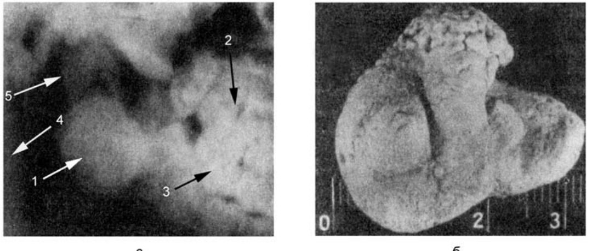
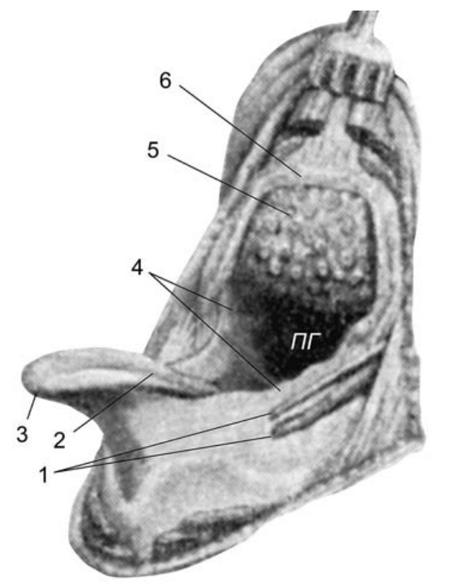
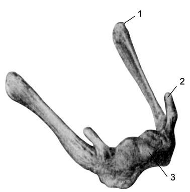
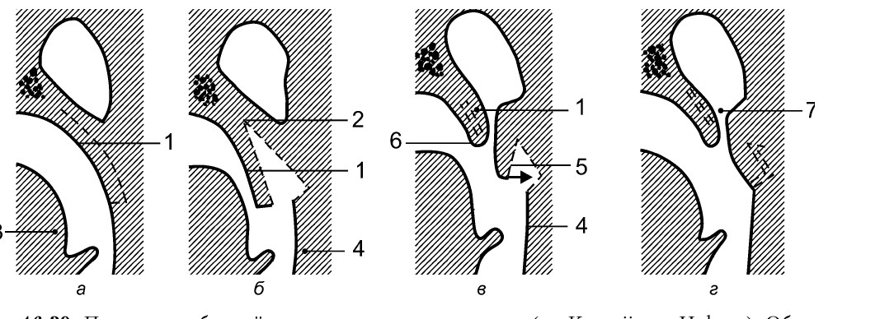
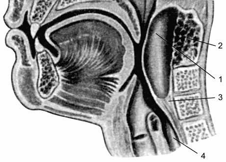
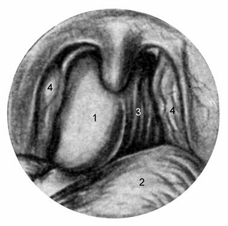
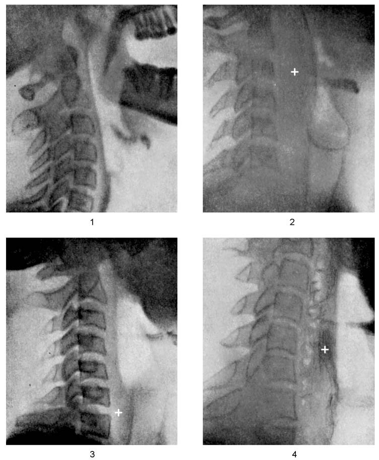

Повреждения глотки
Общие сведения и классификации
Глотка в анатомическом и функциональном отношении представляет собой орган первостепенной важности. В анатомическом отношении она граничит с крупными магистральными сосудами, ранения которых в большинстве случаев приводят к смертельному исходу, с крупными нервными стволами, обеспечивающими иннервацию многих жизненно важных органов. В функциональном отношении глотка является пищепроводным и воздухопроводным органом, обеспечивающим две важнейшие функции — питательную и дыхательную, без которых невозможны основные жизненно важные функции организма. Поэтому повреждения этого органа в подавляющем большинстве случаев приводят к серьезным, порой фатальным ситуациям, требующим экстренной специализированной медицинской помощи.
Классификации повреждений глотки А. Ситуационный принцип классифицирования. Наружные повреждения: по: Бабияк и соавт., т. 1, с. 641–642
Бытовые: тупые травмы; колото-резаные раны; огнестрельные раны.
Производственные: тупые травмы; ранения.
Военного времени: огнестрельные; колото-резаные раны; тупые травмы.
Внутренние повреждения: по: Бабияк и соавт., т. 1, с. 642
Бытовые: химические; термические; инородные тела.
Производственные: химические; термические.
Военного времени: химические; термические.
Б. Этиологический принцип классифицирования. по: Бабияк и соавт., т. 1, с. 642
Тупые травмы.
Колото-резаные раны.
Огнестрельные раны.
Химические ожоги.
Термические ожоги.
Инородные тела.
В. Анатомический принцип классифицирования. по: Бабияк и соавт., т. 1, с. 643
Изолированные ранения: ранения носоглотки; ранения ротоглотки; ранения гортаноглотки.
Сочетанные ранения: ранения носоглотки и окружающих анатомических образований (основание черепа, верхние шейные позвонки, сосудисто-нервный пучок шеи, слуховые трубы, внутренние отделы носа); ранения ротоглотки и окружающих анатомических образований (сосудисто-нервный пучок шеи, шейные позвонки, анатомические образования полости рта); ранения гортаноглотки и окружающих анатомических образований (корень языка, надгортанник, черпаловидные хрящи, нижние шейные позвонки, сосудисто-нервный пучок шеи); ранения глотки, сочетающиеся с ранениями черепа, челюстно-лицевой области, туловища и конечностей.
Г. Комбинированные ранения. по: Бабияк и соавт., т. 1, с. 643
Изолированное ранение глотки + химическое поражение глотки.
Сочетанное ранение глотки + химическое поражение глотки.
Изолированное ранение глотки + термический ожог глотки.
Сочетанное ранение глотки + термический ожог глотки.
Ранения глотки + инородные тела глотки (огнестрельные).
Д. Клинический (синдромный) принцип классифицирования. по: Бабияк и соавт., т. 1, с. 643
Болевой синдром1.
Дисфагический синдром.
Обструктивный синдром.
Геморрагический синдром.
Гнойно-воспалительный синдром.
Синдром инородного тела.
Другие классификации повреждений глотки
Различают ранения глотки наружные и внутренние, проникающие и непроникающие, изолированные и комбинированные (сочетанные), при наличии только входного отверстия — слепые, а если имеется и выходное — сквозные. по: Пальчун, Магомедов, Лучихин, учебник, с. 324
В руководстве по детской оториноларингологии принята следующая классификация. по: Богомильский, Чистякова, с. 257
- Травмы глотки: наружные и внутренние; механические, огнестрельные и т. п.
- Ожоги глотки: термические; химическими веществами.
- Инородные тела.
Ранения, встречающиеся в этих областях, делят на 2 группы: 1) по типу ранящего оружия — огнестрельные, резаные; 2) по характеру повреждения — сквозные, слепые. по: Овчинников, Гамов, с. 192
Наружные повреждения глотки
Наружные повреждения могут вызывать сдавления и контузии глотки, разрывы ее стенок, подвывихи и переломы подъязычной кости и шейного отдела позвоночника, а также проникающие ранения (при воздействии колюще-режущих объектов, осколочных и пулевых ранений). Механизм наружных повреждений обусловлен механическим воздействием на область шеи и опосредованно — собственно на стенки глотки и ее анатомические образования. Внутренние повреждения характеризуются тем, что повреждающий фактор проникает в глотку через полость рта и вызывает механические, термические либо химические ожоги глотки. Инвазивными свойствами обладают вклинившиеся инородные тела, имеющие определенный объем (обструктивный или необструктивный), режущие и колющие грани которых могут причинять различной степени нарушения функций глотки и вызывать нарушение ее целости — от поверхностных ссадин слизистой оболочки до полного прободения стенки глотки. Термические ожоги глотки от приема горячей жидкости возникают редко, ибо, попав в полость рта, такая жидкость немедленно сплевывается даже ценою ожога губ. Чаще всего термические ожоги глотки возникают при вдыхании перегретого пара и аэрозольных продуктов горения, и почти во всех случаях они сочетаются с ожогами гортани, трахеи и бронхов и входят в понятие синдрома ожога ВДП.
Как было отмечено в классификациях, ранения глотки делят на изолированные и сочетанные, по поражающему фактору — собственно на ранения, вклинившиеся инородные тела, ожоги (химические и термические). Сочетанные ранения вызваны в основном ранениями колющими, режущими орудиями и огнестрельными снарядами, при которых ранения глотки могут сочетаться с ранениями других органов головы и шеи (головной мозг, органы орбиты, челюстно-лицевая область, гортань, пищевод, височная кость, крупные шейные сосуды и нервы). по: Бабияк и соавт., т. 1, с. 643–644
Огнестрельные поражения глотки
Чаще всего к сочетанным ранениям глотки относятся огнестрельные ранения, проникающие на большую глубину и охватывающие обширные зоны повреждения.
Наружные ранения глотки во всех случаях обусловлены ранениями шеи. В мирных условиях эти ранения редки, раны имеют чаще колотый или резаный характер и связаны с попытками суицида или убийства. Чаще ранения шеи возникают в результате пулевых или осколочных поражений на поле боя. Ранения шеи в период Великой Отечественной войны составляли около 1% всех огнестрельных ранений. Раны шеи делят на непроникающие и проникающие. К непроникающим ранам относятся те, которые не приводят к ранению крупных сосудов и нервов шеи и не проникают в ее полостные органы (глотка, гортань, трахея). Такие ранения встречались в 4 раза чаще, чем проникающие. Это объясняется тем, что многие раненые с проникающими ранениями шеи гибнут на поле боя или на месте ранения в мирное время. Основными проявлениями проникающих ранений шеи являются обтурационная асфиксия, кровотечение из крупных сосудов, воздушная эмболия, шок, расстройство глотания, вплоть до невозможности питания через рот. Особо тяжелое состояние возникает при ранениях спинного мозга (тетраплегия, нарушение дыхательной и сердечной деятельности и др.).
Раненых с проникающими ранениями шеи при повреждении жизненно важных органов обычно доставляют в лечебное учреждение в коматозном состоянии, поэтому их направляют непосредственно в операционную для оказания экстренной хирургической помощи по жизненным показаниям (остановка кровотечения, борьба с асфиксией, выведение из комы). В зарубежных клиниках для прогностической оценки состояния больного широко пользуются шкалой оценки глубины коматозного состояния в баллах по методике, разработанной в университете г. Глазго.
Ранения носоглотки
Эти ранения часто сочетаются с ранениями носа и околоносовой пазухи. При ранении спереди раневой канал чаще всего проходит через полость носа или одну из передних придаточных пазух носа, реже — сквозь глазницу. Наиболее опасны те проникающие ранения глотки, которые сочетаются с повреждением решетчатой кости, задней стенки лобной пазухи, клиновидной пазухи. Нередко сочетанные повреждения носоглотки сопровождаются назальной ликвореей2. Опасны также повреждения носоглотки и I шейного позвонка с проникновением ранящего снаряда в канал спинного мозга. Такие повреждения чаще всего несовместимы с жизнью. Ранения носоглотки, как правило, осложняются тубоотитом или гемотимпанумом с последующим возможным острым гнойным средним отитом.
Огнестрельные ранения носоглотки при проникновении ранящего снаряда сзади смертельны, поскольку ранящий снаряд прежде, чем достигнуть глотки, наносит повреждения атланту и II шейному позвонку с содержащимся в их позвоночном канале спинным мозгом. Как отмечают Ю. К. Янов и Л. А. Глазников (1993), к общим симптомам ранения носоглотки относятся потеря сознания, шоковое и коматозное состояние, обусловленные в основном сочетанием ранения носоглотки с ранением затылочной области черепа (Корнилов В. А. и соавт., 1987). по: Бабияк и соавт., т. 1, с. 644–646
Огнестрельные ранения среднего и нижнего отдела глотки
Эти ранения, особенно наносимые с близкого расстояния (выстрел в рот), сопровождаются обширными разрушениями челюстно-лицевой области, иногда полным нарушением целости глотки, поражением тел шейных позвонков и ранением спинномозгового канала. Такие ранения практически никогда не бывают изолированными и сочетаются, как уже было сказано, с ранениями позвоночника, а также подъязычной кости, крупных сосудов и нервов шеи. Последнее, как правило, приводит к быстрой гибели больного на месте происшествия.
Характерными повреждениями глотки являются резаные поперечные и колотые раны, наносимые для убийства, самоубийства, ножом, бритвой или лезвием3. Наиболее опасны колотые раны, наносимые по переднему краю грудино-ключично-сосцевидной мышцы под углом нижней челюсти, где проходит общая сонная артерия. Менее опасны поперечные ранения, наносимые при резко запрокинутой голове. В этом случае повреждается трахея или гортань, но не происходит ранения сонных артерий, которые при запрокидывании головы смещаются кзади и не попадают в зону действия режущего орудия. Если рана нанесена выше подъязычной кости, обычно перерезаются корень языка и мышцы, поднимающие гортань; если непосредственно ниже подъязычной кости, то ранится, а иногда и полностью отсекается, надгортанник, который в этом случае вываливается в рану или отходит кверху в просвет ротоглотки. Ранение ниже кадыка повреждает гортань.
Ранения глотки приводят к значительным нарушениям многих ее функций и функций других органов, особенно когда поражены нервные стволы (блуждающий нерв, симпатические ганглии и стволы). В этих случаях возникают афагия, афония, апноэ, нарушение артикуляции. Если смерть не наступает от кровопотери или механической асфиксии, пострадавшего подстерегает другая опасность — вторичные осложнения в виде флегмоны перифарингеальной клетчатки, аррозии крупных кровеносных сосудов, перихондрита гортани, нисходящего шейно-грудного медиастинита.
Основными симптомами ранения глотки являются наличие раны, кровотечение из нее или полости рта и носа (при ранении носоглотки), расстройство глотания, голосообразования, боль, пузырение крови в раневом канале при попытке выдоха с закрытым ртом и зажатым носом. В дальнейшем возможно затруднение дыхания вследствие западения языка при повреждении подъязычной кости и прикрепляющихся к ней мышц. При узком раневом канале и отеке в области гортаноглотки возможно возникновение подкожной или медиастинальной эмфиземы.
Лечение ранений шеи и глотки
Основная задача первой помощи — временная остановка кровотечения (при его наличии). Применяются пальцевое прижатие сонной артерии к переднему бугорку VI шейного позвонка (tuberculum caroticum), а затем давящая повязка с пелотом и шиной, наложенной на плечо здоровой стороны и на голову. Шину можно заменить запрокинутой на голову верхней конечностью здоровой стороны, по А. Каплану. При оказании первой врачебной помощи может быть выполнена трахеотомия по жизненным показаниям. На этапе оказания квалифицированной медицинской помощи показанием к операции служит прежде всего кровотечение. Однако ревизия сосудисто-нервного пучка шеи обязательна при одном только подозрении на ранение крупного сосуда. Неотложным показанием к хирургической обработке раны является также ранение пищевода. В этом случае рану широко рассекают и тампонируют. Наконец, может потребоваться трахеостомия по поводу вторично наступающей обструкции дыхательных путей на уровне гортаноглотки и гортани. При отсутствии жизненных показаний к операции раненных в шею эвакуируют в специализированное отделение, где им будет оказана окончательная хирургическая помощь. по: Бабияк и соавт., т. 1, с. 646–647
Ранения и травмы глотки
Этиология и патогенез
Внутренние ранения чаще встречаются в мирное время, а наружные в военное. Наружные ранения глотки делятся на резаные, колотые, ушибленные, огнестрельные; они являются комбинированными, так как ранящий предмет, прежде чем достигнуть глотки, травмирует ткани лица и шеи. При инфицировании мягких тканей в глубоких межмышечных и фасциальных пространствах могут возникнуть воспалительные, гнойные процессы, которые распространяются в средостение, вызывая грудной медиастинит.
Внутренние ранения глотки, как правило, бывают изолированными, протекают легче и возникают при повреждении органа через естественные пути, например осколком кости, инородным телом. Внутренние ранения обычно не представляют большой опасности, поскольку повреждения неглубокие в пределах слизистой оболочки.
Ранения носоглотки
Повреждения верхнего отдела глотки встречаются редко и обычно сочетаются с ранением окружающих тканей и органов. Обычно это колотые или огнестрельные травмы, которые могут повреждать шейные позвонки, глазницу, продолговатый и спинной мозг, сонные артерии, яремные вены, что часто несовместимо с жизнью. по: Пальчун, Магомедов, Лучихин, учебник, с. 324–325
Повреждения глотки бывают внутренними и наружными. Наружные повреждения глотки могут быть резаные, колотые, ушибленные, огнестрельные. Последние подразделяются на пулевые и осколочные. Все наружные травмы являются комбинированными, поскольку ранящий предмет повреждает ткани лица или шеи. Эти раны могут быть проникающими, когда травмируются все слои стенки глотки или ранящий предмет повреждает слизистую оболочку.
Этиология
Внутренние травмы глотки возникают в результате ранения стенок глотки через естественные пути обломками костей, стекла или другими острыми инородными телами. У детей вследствие падения или во время игры острый предмет может травмировать мягкое небо, миндаликовые дужки, миндалины, стенки глотки через открытый рот. Эти внутренние повреждения могут быть в виде небольшой ссадины слизистой оболочки глотки вплоть до полного повреждения ее стенки и проникновения раневого канала в прилегающую клетчатку.
Наружные и глубокие внутренние травмы глотки бывают очень тяжелыми, так как могут повреждаться кровеносные сосуды и нервы, вызывая развитие серьезных кровотечений, парезов и параличей, которые сопровождаются кашлем и одышкой. Попадание крови в дыхательные пути приводит к развитию аспирационной пневмонии. В дальнейшем может развиться воспаление глубоких тканей шеи с поражением костей лицевого скелета, тел шейных позвонков. Гнойный процесс клетчатки шеи по межфасциальным пространствам распространяется в средостение, вызывая медиастинит, нередко заканчивающийся смертью больного. Не исключена вероятность развития сепсиса. Переход воспалительного процесса на гортань может вызвать отек ее слизистой оболочки и острый стеноз. по: Заболотный и соавт., с. 304–305
Травмы глотки, особенно ее среднего отдела, встречаются в детском возрасте относительно часто и требуют неотложной помощи. Травмы глотки могут возникать как изнутри (изолированно), так и снаружи (при проникающих ранениях лица и шеи). Небольшие повреждения слизистой оболочки и мягких тканей в виде ссадин, поверхностных травм причиняются во время торопливого заглатывания неразжеванной пищи, а также острыми костями, инородными телами (осколки игрушек, стекла и т. д.). Заднюю стенку глотки, мягкое небо и передние дужки могут травмировать различные острые, колющие предметы (палки, игрушки, карандаши), которые дети, особенно младшего возраста, нередко берут в рот; повреждения в таких случаях возникают при падении ребенка с открытым ртом, при резком рывке вперед.
Новорожденным наносится травма при различных акушерских пособиях (при грубых манипуляциях в полости рта, при проведении эндотрахеальной интубации, при отсасывании слизи электроотсосом). по: Богомильский, Чистякова, с. 255–256
Ранения шеи нередко сочетаются с повреждением отделов глотки. Бытовые травмы среднего и нижнего отделов глотки, как правило, бывают изолированными, а боевые (огнестрельные) повреждения нередко сочетаются с ранениями языка, нижней челюсти. Такие ранения относятся к разряду тяжелых и требуют совместной работы оториноларинголога и челюстно-лицевого хирурга.
Огнестрельные ранения глотки чаще располагаются во фронтальной плоскости, так как внедрение пули или осколка в сагиттальной плоскости вызывает повреждение шейного отдела позвоночника, спинного мозга и приводит к летальному исходу. Особенностью огнестрельных ранений органов шеи является ход раневого канала: вследствие легкой смещаемости тканей шеи и глотки направление канала может меняться и определение истинного хода его вызывает затруднение; исключительные трудности в определении истинного хода раневого канала наблюдаются при ранении пулей со смещенным центром тяжести. по: Овчинников, Гамов, с. 192
Клиническая картина
Клиническая картина зависит от вида ранения, локализации повреждения. При комбинированных наружных ранениях в первый момент после травмы наиболее тяжелыми являются такие симптомы, как кровотечение, контузия, нарушения дыхания, речевой функции, болевая симптоматика. Кровь, попадая в дыхательные пути, может служить причиной асфиксии, аспирационной пневмонии. Внутритканевое кровотечение может привести к сдавлению дыхательных путей, инфицированию с последующим абсцедированием.
Иррадиация боли в ухо указывает на повреждение боковых стенок носоглотки и устьев слуховых труб, при котором возможно затекание крови в барабанную полость (гематотимпанум), при этом при отоскопии характерно выпячивание и синюшность барабанной перепонки.
Появление эмфиземы мягких тканей вследствие попадания воздуха в межтканевое пространство — один из частых и характерных признаков проникающего ранения дыхательных путей. Появление эмфиземы определяется по припуханию и крепитации мягких тканей, которое также может способствовать распространению инфекции, так как расслаивает ткани. Межтканевая эмфизема может быстро нарастать, особенно при кашле.
При ранении глотки могут быть повреждены глоточное нервное сплетение и верхний отдел блуждающего нерва, что сопровождается парезом или параличом мягкого нёба на стороне травмы. Поражение подъязычного нерва проявляется отклонением языка при его высовывании в сторону ранения. Повреждение возвратного (нижнего гортанного) либо блуждающего нервов, как правило, сопровождается параличом гортани на одноименной стороне и появлением охриплости. В редких случаях возможно ранение шейного симпатического ствола, что характеризуется триадой симптомов: энофтальм, сужение глазной щели и зрачка на стороне поражения (синдром Горнера — Бернара).
При ранениях носоглотки наиболее важными симптомами являются кровотечение (из внутренней челюстной, внутренней сонной артерий) и затруднение носового дыхания. Возможен травматический остеомиелит верхних шейных позвонков или тела клиновидной кости. по: Пальчун, Магомедов, Лучихин, учебник, с. 325–326
Клиническая картина травм глотки зависит от характера раны, повреждения близлежащих органов и тканей, проявления воспалительной реакции. Клинические проявления у больных могут варьировать от нерезкой боли в глотке и дискомфорта во время глотания до очень тяжелого состояния. Во многих наблюдениях внутренние раны отличаются более легким течением, при осмотре визуализируются кровоизлияния, экскориации, отек слизистой оболочки, а на месте повреждения слизистой оболочки — сероватые налеты. В случае более тяжелых травм пациенты жалуются на резкую боль в глотке, кровотечение из носа, рта, кашель, затрудненное дыхание. Объективно местно определяют кровотечение, резкий отек слизистой оболочки, выпячивание стенки глотки. Позже может развиться опухание регионарных лимфатических узлов. У некоторых больных в результате ранения глотки развивается подкожная эмфизема. по: Заболотный и соавт., с. 305
Травмы глотки сопровождаются кровотечением, затруднением и болезненностью при глотании, гнусавостью. Наружные раны глотки, как правило, сочетаются с ранениями гортани, что приводит к развитию стеноза и дисфонии. Колотые и особенно резаные раны нередко сопровождаются ранением артерий, яремной вены и средостения с массивными кровотечениями. Огнестрельные ранения носоглотки часто сочетаются с повреждением носа, околоносовых пазух, глазницы и позвоночника, а ранения среднего и нижнего отделов глотки сопряжены с повреждением жизненно важных органов, сонных артерий, яремной вены, сосудисто-нервного пучка с последующим развитием флегмоны и абсцессов шеи, сепсиса, медиастинита с соответствующими клиническими проявлениями. При механических ятрогенных травмах у новорожденных детей выявляются гематомы, ссадины, баллотирующие отслоившиеся участки слизистой оболочки, отмечаются клокочущее дыхание, выделение пенистой мокроты с примесью крови, дисфагия. по: Богомильский, Чистякова, с. 257
Одним из основных симптомов ранения глотки является нарушение акта глотания из-за повреждения чувствительных нервов, возникновение гематомы, а в поздние сроки — образование абсцесса в мягких тканях глотки. Нередко встречается сочетание повреждений тканей глотки с ранением гортани, что накладывает особый отпечаток на клиническую картину, поскольку наряду с нарушением глотания, обильной саливацией возникает и нарушение дыхания. по: Овчинников, Гамов, с. 192
Диагностика
Диагностика основывается на данных анамнеза, наружного осмотра, пальпации, фарингоскопического и рентгенологического обследования. При инструментальном обследовании можно увидеть участок нарушения целостности слизистой, следы геморрагии, сужение различных отделов глотки за счет отека, инфильтрации слизистой оболочки, инородного тела и др. Рентгенологическое исследование позволяет уточнить границы поврежденной зоны, установить положение костных отломков, выявить и определить положение инородных тел. При глубоких ранениях в области гортаноглотки показано рентгеноконтрастное исследование. по: Пальчун, Магомедов, Лучихин, учебник, с. 326
При внешних повреждениях клиническая картина более тяжелая и разнообразная (это зависит от повреждения близлежащих участков). В этом случае кроме клинического обследования проводят рентгенологическое, что дает возможность уточнить границы поврежденной зоны, установить положение обломков костей, а также выявить локализацию инородных тел. по: Заболотный и соавт., с. 305
В диагностике повреждений глотки помимо фарингоскопии, наружного осмотра большое значение имеет рентгенография — для определения инородных тел (пуля, осколок, обломок холодного оружия) и повреждения позвоночника. по: Солдатов, Гофман, гл. 3
Лечение
Лечебные мероприятия необходимо начинать с первичной хирургической обработки раны, куда входят меры по остановке кровотечения, туалету и ревизии раны, удалению инородных тел и обрывков тканей, противошоковые мероприятия и введение противостолбнячной сыворотки. Инородные тела из различных отделов глотки удаляют с использованием инструментальных методов осмотра. При повреждении носоглотки производят заднюю тампонаду носа. В некоторых случаях, при недостаточности задней тампонады, как и при сильном кровотечении из других отделов глотки, приходится прибегать к перевязке наружной сонной артерии. Перевязка последней даже с обеих сторон не вызывает каких-либо значимых нарушений кровоснабжения головного мозга и лица.
При нарушении дыхания для предотвращения попадания крови и пищи в дыхательные пути и для профилактики аспирационной пневмонии производят трахеостомию. Учитывая частое нарушение глотательной функции, а также с целью профилактики аспирационной пневмонии, застоя пищи и слюны, необходимо с первых дней наладить кормление через мягкий желудочный зонд, вводимый через нос на 1–2 нед. Наконец, в зависимости от выраженности раневого процесса и реакции организма необходима комбинированная противовоспалительная, дезинтоксикационная, трансфузионная, противоотечная терапия и анальгетики. по: Пальчун, Магомедов, Лучихин, учебник, с. 326–327
Внутренние повреждения связаны, как правило, с инородными телами или случайными предметами (чаще у детей). Тактика лечения — устранение инородного тела, противовоспалительная терапия, щадящая диета. Наружные повреждения глотки возникают при резаных, колотых или огнестрельных ранах лица и шеи и отличаются разнообразием симптомов и степеней тяжести в зависимости от локализации ранения и хода раневого канала, определяющих повреждение других органов шеи, крупных сосудов, позвоночника. Среди первых лечебных мероприятий прежде всего — остановка кровотечения. Здесь успешно может быть применена тампонада носоглотки при кровотечении из неё или тампонада через раневой канал, как, например, при ранении яремной вены — между нижней челюстью и шиловидным отростком (по К. Л. Хилову). При необходимости производят и перевязку магистральных сосудов — наружной и даже общей сонной артерии.
Другим жизненно важным вопросом является обеспечение функции дыхания, которое может быть нарушено и самим ранением, и его последствиями (гематома, отек, воспаление). Здесь может быть применена противоотечная терапия, а при необходимости — трахеотомия. После гемостаза и восстановления дыхания необходимо обработать раны шеи, извлечь повреждающие доступные инородные тела. Питание больного также должно быть обеспечено врачом, поскольку чаще всего при таких ранениях требуется введение зонда в пищевод во избежание попадания пищи и жидкости в раневые каналы на 1–2 недели. по: Солдатов, Гофман, гл. 3
Больным с огнестрельными ранениями назначают обезболивающие средства, проводят остановку кровотечения и другие противошоковые мероприятия. Остановку кровотечения выполняют методом тампонады носовой части глотки, перевязки сосудов в ране или на протяжении. После этого проводят хирургическую обработку раны с удалением обломков костей, инородных тел. Нередко для участия в операции приглашают нейрохирурга или стоматолога. Обязательно вводят противостолбнячную сыворотку и назначают антибиотики. Больным с внутренними повреждениями в первую очередь проводят удаление инородных тел и назначают противовоспалительную терапию. Следует защитить больного от пищевых и языковых раздражителей. При условии глубоких внутренних ранений необходимо ввести через нос желудочный зонд для питания больных. Угроза асфиксии требует проведения трахеостомии. по: Заболотный и соавт., с. 305–306
Легкие повреждения специального лечения не требуют, назначают щадящую диету, полоскание горла. При разрыве мягкого неба и более глубоком и распространенном поражении детей госпитализируют. Вводят противостолбнячный анатоксин (с учетом профилактических прививок). Проводят первичную хирургическую обработку раны, удаляют сгустки крови и баллотирующие обрывки тканей, останавливают кровотечение, послойно зашивают рану (отдельно слизистую оболочку и мышечный слой). Назначают щадящую диету (пища должна быть негорячей). Проводят противовоспалительное лечение. При глубоких ранениях глотки для предупреждения инфицирования и попадания пищи в окологлоточную клетчатку запрещают прием пищи до исследования акта глотания с контрастным веществом. Назначают кормление через зонд или через гастростому.
Неотложная помощь больным с наружными ранами глотки включает остановку кровотечения вплоть до перевязки сонных артерий, при ранении носоглотки — заднюю тампонаду, первичную хирургическую обработку раны. При тяжелых ранениях глотки показана трахеотомия для восстановления дыхания и предупреждения аспирационного синдрома. по: Богомильский, Чистякова, с. 258
Ранения шеи и глотки требуют соблюдения определенных правил при проведении первичной обработки ран. Ни в коем случае нельзя ушивать кожную рану, а необходимо раскрыть раневой канал. Только динамическое наблюдение за раненым позволит решить вопрос о сроках закрытия раны, поскольку вследствие размозжения мягких тканей, скрытых гематом возможно нагноение в глубоких отделах шеи, что может привести к очень тяжелым последствиям. Особо следует подчеркнуть и способы остановки кровотечений при ранениях глотки: необходимо обязательно лигировать сосуды и не пытаться остановить кровотечение тампонадой. Лигирование кровоточащих сосудов в ранах шеи бывает очень сложным, поэтому приходится прибегать к перевязке крупных магистральных сосудов, в частности наружной сонной артерии и др. по: Овчинников, Гамов, с. 192–193
Ранения глотки в учебнике Пальчуна для колледжей
Различают ранения глотки наружные и внутренние, закрытые подкожные и открытые с повреждением кожи, изолированные и комбинированные. Кроме того, бывают ранения, проникающие и не проникающие в полость глотки, при наличии только входного отверстия — слепые, а если есть и выходное — сквозные. Наружные ранения глотки делят на резаные, колотые, ушибленные, огнестрельные; они бывают комбинированными, так как ранящий предмет, прежде чем достичь глотки, травмирует ткани лица или шеи; обычно эти ранения открытые. Внутренние ранения глотки чаще бывают изолированными и возникают при повреждении органа через естественные пути, например, осколком кости, инородным телом. Ранения только глотки чаще всего не представляют большой опасности, поскольку повреждается лишь поверхностный слой внутренней стенки органа без поражения окружающих тканей; к таким ранениям относят ссадины слизистой оболочки, поверхностные ранения ее и уколы. Такие раны необходимо обработать 3% раствором серебра нитрата. При разрывах мягкого нёба и дужек необходимы обработка раны и наложение первичных швов.
При комбинированных ранениях глотки, как правило, повреждена окружающая ее рыхлая клетчатка, малоустойчивая к инфекции — в ней быстро развиваются гнойные и некротические процессы. Возникающий таким образом шейный медиастинит может быстро распространиться по фасциальным футлярам в средостение, вызывая крайне тяжело протекающий грудной медиастинит. Комбинированные ранения глотки зачастую лишь часть травмы наряду с другими повреждениями шеи, головы и всего тела. При таких смешанных ранениях ранение глотки в первый момент может отступить на второй план. Ранения, проникающие в корень языка и гортаноглотку, также могут нарушать дыхание и речевую функцию. Внутриполостное кровотечение опасно еще и тем, что, попадая в дыхательные пути, кровь нарушает дыхание вплоть до асфиксии; кроме того, даже в небольшом количестве она может стать причиной аспирационной пневмонии. В течение первых 2 сут, пока не наступит инфильтрация краев раны, возможно образование и нарастание эмфиземы — межтканевого проникновения воздуха, которое бывает чаще и более выраженным при ранениях гортани и трахеи. Сдавление воздухом внутригрудных органов может оказаться столь значительным, что нарушит их функционирование.
Неотложные меры при ранении глотки — остановка кровотечения, восстановление дыхания и противошоковые мероприятия. Для остановки сильного кровотечения сдавливают пальцами общую сонную артерию ниже места кровотечения (обычно в области переднего бугорка VI шейного позвонка), при необходимости проводят заднюю тампонаду носа, ревизию раны с лигированием кровоточащих сосудов. Недостаточность этих мер служит основанием для перевязки наружной сонной артерии с одной, а в необходимых случаях — с обеих сторон, что не вызывает каких-либо нарушений кровоснабжения головного мозга. С целью нормализации дыхания, предотвращения попадания крови в дыхательные пути, более полного отсасывания крови и слизи из трахеи и бронхов проводят трахеостомию. Одновременно кровь раненого исследуют на групповую и резус-принадлежность, налаживают систему для переливания крови и жидкостей в локтевую вену. После нормализации жизненно важных функций проводят обработку раны: удаляют нежизнеспособные ткани, костные осколки и инородные тела, обеспечивают хорошее дренирование раны. Для предупреждения затеков в рану слюны и пищи через нос или рот вводят пищевой зонд. Противостолбнячную сыворотку применяют по схеме, назначают антибиотики. по: Пальчун, учебник для колледжей, с. 165–167
Точка зрения зарубежных авторов
В британском руководстве главным вопросом тактики при проникающих ранениях шеи на протяжении последних десятилетий названо то, нуждается ли каждое такое ранение в обязательной ревизии. Произошёл отчётливый переход от обязательной ревизии к избирательному консервативному ведению на основе клинической оценки и специальных исследований: гибкой эндоскопии, эзофагографии, компьютерной томографии высокого разрешения и дуплексного сканирования сосудов. До Второй мировой войны неоперативное лечение проникающих ранений шеи сопровождалось летальностью 15–18%; ранняя ревизия вместе с антибиотиками и трахеостомией снизила её до 7%. Большинство травматологических центров сейчас придерживается той или иной формы избирательного консервативного ведения.
Повреждение гортаноглотки следует подозревать при проникающих ранениях средней зоны шеи, особенно при дисфагии, одинофагии, изменении голоса, кровохарканье, кровавой рвоте и подкожной эмфиземе. Гибкая назофарингоскопия может выявить отёк, кровь в глотке, а перфорацию — если она расположена в верхнем отделе гортаноглотки. Прямая фарингоскопия должна выявить все повреждения, однако эзофагография ненадёжна. По данным ретроспективного исследования 47 повреждений гортаноглотки, при повреждениях выше черпаловидных хрящей осложнений не было, а при повреждениях ниже черпаловидных хрящей их частота составила 22%. Повреждения верхнего отдела гортаноглотки можно вести без операции: эта часть гортаноглотки просторна, давление в её просвете низкое, её окружают средний и нижний констрикторы. Нижний отдел гортаноглотки воронкой переходит в перстнеглоточный сегмент, он менее просторен, давление в нём выше, его окружает только нижний констриктор; его повреждения следует ревизовать, ушивать и дренировать, как повреждения пищевода. Поскольку аспирированный барий может вызвать тяжёлые лёгочные осложнения, у пострадавших с травмой его применять не следует — используют водорастворимое контрастное вещество. по: Scott-Brown, т. 3, гл. 38, с. 599–602
Инородные тела глотки
Классификация
Инородные тела глотки относятся к категории повреждающих факторов, поскольку результатом их действия на стенку глотки могут быть ссадины, проколы слизистой оболочки и поражения более глубоких слоев глотки. Их классифицируют по характеру возникновения (экзогенные, эндогенные), по локализации (носоглотка, ротоглотка, гортаноглотка), по условиям происхождения (по неосторожности, преднамеренные, случайные).
Патогенез и клиническая картина
Глотка служит основным барьером на пути инородных тел, препятствующим их проникновению в дыхательные и пищепроводные пути. Этому способствуют ряд анатомических условий и рефлексов, которые лежат на пути инородного тела. Основным механизмом защиты является рефлекторный спазм глоточных жомов, возникающий в ответ на ощущение постороннего тела в ротоглотке или гортаноглотке. Бытовые инородные тела чаще всего локализуются в небных миндалинах, задней стенке ротоглотки, в боковых валиках, в щелях между небными дужками, в надгортанных ямках, язычной миндалине и грушевидных синусах. Чаще всего это мелкие косточки и предметы, попавшие в полость рта вместе с пищей или преднамеренно удерживаемые губами (гвозди, шпильки, шурупы и т. п.). Нередко инородным телом глотки становится съемный зубной протез, дислоцируемый во сне. Внедрившиеся острые мелкие инородные тела причиняют значительное беспокойство, поскольку при глотании, разговоре и даже при дыхании они вызывают боль и нередко спазм глоточной мускулатуры, лишая больного не только нормального перорального питания, но и сна. Инородные тела ротоглотки обычно хорошо визуализируются и легко удаляются. Хуже обстоит дело с тонкими рыбьими косточками, которые выявляются значительно труднее. Также плохо визуализируются инородные тела гипофаринкса и гортаноглотки, особенно в области грушевидных синусов, между корнем языка и надгортанником, в области черпаловидных складок. Боли особенно выражены при «пустом глотке». Они могут иррадиировать в ухо, гортань, вызывать першение и кашель. На месте внедрения инородного тела в окружающих его тканях может развиться воспалительная реакция, иногда перитонзиллярный абсцесс, а при глубоком внедрении — заглоточный абсцесс. Локализация инородных тел в носоглотке — явление редкое. Туда инородные тела попадают по разным причинам: во время экстракции зуба, при манипуляциях в полости носа или при выбросе инородного тела из гипофаринкса резким кашлевым толчком. Чаще инородные тела носоглотки наблюдаются при параличе мягкого неба.
Наибольшую опасность представляют инородные тела гипофаринкса. Они причиняют настолько сильные боли, что акт глотания становится непереносимым. А поскольку при инородных телах глотки возникает обильное слюнотечение, то невозможность из-за боли проглатывать слюну вызывает выделение слюны из полости рта через губы, которые мацерируются и воспаляются. Объемные инородные тела гортаноглотки оказывают давление на гортань, нарушая внешнее дыхание. Особенно опасны эластичные инородные тела, например мясные, которые плотно обтурируют гортаноглотку в результате спазма нижних констрикторов глотки, не оставляя ни малейшей щели (что обычно свойственно твердым телам) для прохождения воздуха. Существуют многочисленные примеры гибели людей именно от мясных инородных тел гортаноглотки.
Особую категорию инородных тел глотки составляют живые объекты (аскариды, пиявки). Первые (эндогенные) попадают ретроградным путем из кишечника, вторые — при питье воды из пруда. К эндогенным инородным телам глотки относятся также петрификаты небных миндалин, которые возникают в криптах путем пропитывания солями кальция их казеозного содержимого (наподобие петрификатов первичного туберкулеза легких в прикорневых лимфоузлах), а также путем кальциноза внутриминдаликовых абсцессов. по: Бабияк и соавт., т. 1, с. 647–648

Инородные тела верхних дыхательных путей, в частности глотки, встречаются часто. Причинами их попадания в глотку могут быть невнимательность и поспешность при приеме пищи, разговор или смех во время еды, кашель, чихание во время еды. Дети, оставленные без присмотра, берут в рот и пытаются проглотить различные предметы. У пожилых людей инородными телами могут быть зубные протезы. Наконец, в условиях жаркого климата инородными телами становятся попадающие вместе с выпиваемой жидкостью пиявки или другие мелкие насекомые. Инородные тела могут быть различной природы и формы: рыбьи и куриные кости, мелкие металлические предметы, кусочки фруктов, стекло и др. В зависимости от формы и величины инородные тела могут застревать в ткани нёбных миндалин, боковых валиках глотки, язычной миндалине, валекулах, грушевидном синусе и т. д.
Клиническая картина складывается из жалоб больного на ощущение комка в горле, наличия болей в горле, усиливающихся при глотании. При крупных инородных телах, застревающих в ротоглотке, возможна обтурация дыхательных путей с последующей асфиксией и летальным исходом. В некоторых случаях инородное тело глотки может вызвать флегмону или абсцесс боковой стенки глотки, а также подкожную эмфизему и медиастинит, что требует соответствующего хирургического вмешательства. по: Пальчун, Магомедов, Лучихин, учебник, с. 323–324
Инородные тела попадают в глотку при дыхании или при глотании и представляют собой бесчисленно разнообразные предметы. Исходы пребывания инородного тела в глотке различны: оно может быть откашляно, выброшено с выдохом, выплюнуто, свободно лежать в глотке, не травмируя слизистую, продвинуться далее и стать инородным телом гортани, трахеи и бронхов, пищевода, наконец, травмировать слизистую и выйти в мягкие ткани, чаще всего миндалины, грушевидные синусы, корень языка.
Как правило, вышеописанные инородные тела глотки благополучно удаляются, не приводят к смертельным исходам от острой асфиксии, как инородные тела гортани. Исключение составляют крупные инородные тела, застревающие при акте глотания в ротоглотке, поскольку не могут соскользнуть в пищевод с надгортанника, закрывающего в это время вход в гортань. Если такое инородное тело больной не сможет отхаркнуть при сильном выдохе или рвотном движении, может наступить потеря сознания и смерть. по: Солдатов, Гофман, гл. 3
Инородные тела часто попадают в глотку во время еды (рыбные и мясные кости) или случайно (монеты, игрушки, частицы колосков злаковых культур, зубные протезы, гвозди, булавки и пр.). Вероятность попадания инородных тел возрастает у лиц старшего возраста при пользовании зубными протезами (перестают контролировать пищевой комок). Часто инородные тела глотки наблюдаются у детей, которые кладут в рот различные предметы. В странах с жарким климатом в глотке можно обнаружить живые инородные тела (пиявки), которые попадают внутрь в результате употребления воды из загрязненных водохранилищ. Острые инородные тела чаще всего застревают в области прохождения пищевого комка: небные миндалины, корень языка, боковые стенки глотки, валекулы, грушевидные карманы. Большие инородные тела (монеты, игрушки, кольца от сосок) остаются в гортанной части глотки, перед входом в пищевод.
Наличие инородного тела в глотке проявляется неприятным ощущением и колющей болью в определенном месте во время глотания. При наличии больших инородных тел, которые находятся в месте входа в пищевод, кроме ощущения инородного тела наблюдается затруднение глотания, а у некоторых пострадавших — и дыхания. При наличии инородного тела в глотке наблюдается усиление саливации. по: Заболотный и соавт., с. 306
Глотка изнутри обычно повреждается инородными телами, которые попадают туда почти всегда через рот вместе с едой (рыбьи и мясные кости), или фрагментами игрушек и предметов, которые дети берут в рот. Инородное тело застревает в глотке или вследствие внедрения острым краем в ее стенку (в области корня языка, грушевидных синусов или валлекул), или в результате его чрезмерной величины (соска, крупная часть игрушки). Застреванию инородного тела в глотке способствует спазм гладких мышц глотки в результате раздражения инородным телом. Проникновение инородного тела через полость рта в глотку у детей облегчается отсутствием зубов и самоконтроля при еде, беспокойным поведением во время еды, поспешным заглатыванием плохо пережеванной пищи, а также дурной привычкой держать во рту различные предметы. Возможно попадание инородного тела в глотку через носовую полость.
В средней части глотки застревают преимущественно мелкие и острые предметы, которые внедряются в небные миндалины, дужки, корень языка, валлекулы, грушевидные синусы. Крупные инородные тела задерживаются в нижней части глотки над входом в пищевод или в грушевидных синусах: они могут закрыть просвет дыхательных путей, привести к резкому затруднению дыхания и асфиксии. В носоглотку инородные тела попадают из носа или из средней части глотки при неудачных попытках их извлечения, при рвоте, проникающих ранениях; возможно заползание глистов.
При инородных телах клинические симптомы разнообразны и зависят от характера и размера инородного тела. Они включают боль при глотании, затруднение при проглатывании пищи, усиленную саливацию, рвоту с примесью крови, навязчивый кашель, стенотические нарушения. При фарингоскопии выявляются ссадины, дефекты слизистой оболочки, гематомы, реактивный отек, фибринозный налет. по: Богомильский, Чистякова, с. 256–257
Инородные тела глотки наблюдаются главным образом в ротовой и гортанной частях глотки. Как правило, попадают с пищей (рыбьи кости, шелуха от злаков, кусочки дерева и др.). Чаще всего причинами попадания инородных тел в глотку являются поспешная еда, отсутствие зубов, болезни жевательного аппарата, привычка держать во рту разные предметы. Острые инородные тела часто застревают в области небных миндалин, передних и задних небных дужках, корне языка.
Клиническая картина
Ощущение чего-то постороннего в горле, боль и затруднение при глотании, повышенная саливация. В случае крупных инородных тел нарушаются речь и дыхание. При длительном пребывании инородного тела развивается воспалительный процесс, иногда с образованием флегмоны (абсцесс корня языка, заглоточный абсцесс). по: Овчинников, Гамов, с. 189–190
Диагностика
Диагноз устанавливают на основании анамнеза, эндоскопической картины и, при наличии указаний на рентгеноконтрастное инородное тело, — рентгенологического исследования. При низко расположенном инородном теле прибегают к прямой гипофарингоскопии, особенно в тех случаях, когда оно расположено позади перстневидного хряща. Если инородное тело не удается обнаружить, то ориентируются по локальной воспалительной реакции: гиперемия, отек, ссадина. Случается так, что инородное тело, перед тем как проникнуть далее в пищевод (желудок), повреждает слизистую оболочку глотки, что вызывает болевые ощущения, но интенсивность этих ощущений не столь выражена, как при наличии инородного тела, и глотательные движения осуществляются более свободно, без наружного слюнотечения. При жалобах больного на ощущение дискомфорта и боли в загрудинной области следует заподозрить инородное тело пищевода и принять соответствующие меры. по: Бабияк и соавт., т. 1, с. 648–649
Особые трудности возникают при подозрении на попадание инородного тела в нижний отдел глотки, например в грушевидный карман или вблизи перехода глотки в пищевод. Одним из признаков инородного тела, скрытого в грушевидном синусе, служит задержка в нем слюны (слюнное озерцо). В таких случаях, кроме обычной ларингоскопии, используются прямые методы с применением жестких эзофагоскопов.
Диагностика основывается на жалобах больного, данных анамнеза и инструментального осмотра (мезофарингоскопия, эпифарингоскопия, непрямая ларингоскопия). Для уточнения локализации инородного тела большую помощь оказывает рентгенографическое исследование, ощупывание пальцем подозрительных мест. Нередко субъективные жалобы больного вызываются не инородным телом, а травмой слизистой оболочки, нанесенной инородным телом. В таких случаях необходим динамический контроль за состоянием больного и изменением фарингоскопической картины в течение нескольких дней. по: Пальчун, Магомедов, Лучихин, учебник, с. 323–324
Обследование больных с инородными телами глотки следует начинать с фарингоскопии. Если инородное тело во время фарингоскопии не выявлено, необходимо провести непрямую гипофарингоскопию, во время которой удается увидеть инородное тело в области язычной миндалины, валекул, черпаловидного хряща или стенки грушевидного кармана. Крупные тела хорошо видны в гортанной части глотки. Одним из признаков присутствия инородного тела в области грушевидного кармана может быть задержка в нем слюны (слюнное озеро). Пенистая слюна, отек слизистой оболочки и затрудненное дыхание дают основание заподозрить инородное тело гортанного отдела глотки. Больные часто глотают черствые хлебные корки, чтобы удалить инородное тело, при этом оно проникает в глубину тканей или ломается. В таком случае следует провести пальцевое исследование ротовой и гортанной части глотки, при котором можно прощупать находящееся глубоко инородное тело; при наличии подозрения на металлическое инородное тело выполняют рентгенографию. по: Заболотный и соавт., с. 306–307
Диагноз устанавливают на основании данных анамнеза, тщательного осмотра глотки, пальпации (мелкие, глубоко внедрившиеся инородные тела, например рыбьи кости), рентгенологического исследования (металлические предметы). Нередко больные жалуются на инородное тело, а при осмотре глотки видны лишь следы травмы от проглоченного предмета. Царапины и ссадины слизистой оболочки могут долгое время симулировать присутствие инородного тела. по: Овчинников, Гамов, с. 190
Возможны воображаемые инородные тела глотки. Такие больные обращаются к разным врачам с жалобой на то, что они подавились инородным телом несколько месяцев или лет назад. До сих пор они ощущают боль, а также наличие инородного тела, которое способно перемещаться. Во время объективного обследования какие-либо изменения в горле не отмечаются. Общее состояние больных не нарушено. Эти пациенты болеют различными неврозами (неврастении, психастении и т. п.). Их очень тяжело убедить в том, что инородного тела у них нет. по: Заболотный и соавт., с. 307
Лечение
Лечение осуществляется путем удаления инородных тел глотки. Поучительно отношение В. И. Воячека к тактике лечения инородных тел ЛОР-органов, отраженное в следующей классификации вариантов локализации инородных тел и возможных действий. по: Бабияк и соавт., т. 1, с. 649
- Инородное тело труднодоступно, но не представляет непосредственной опасности для больного. Удаление такого инородного тела может быть отсрочено и проведено специалистом в соответствующих условиях.
- Инородное тело труднодоступно и представляет для больного определенную, но не жизненную опасность. Удаление инородного тела показано в кратчайшие сроки в специализированном отделении.
- Инородное тело легкодоступно и не представляет непосредственной опасности. Такое инородное тело может быть удалено ЛОР-специалистом в амбулаторных или стационарных условиях без особой спешки, но в течение ближайших часов.
- Инородное тело легкодоступно и представляет для больного определенную, но не жизненную опасность. Такое инородное тело может быть удалено ЛОР-специалистом в амбулаторных или стационарных условиях без особой спешки, но в течение ближайших часов.
В тех случаях, когда инородное тело представляет непосредственную угрозу для жизни (обтурационная асфиксия), его пытаются удалить на месте происшествия до прибытия специальной бригады скорой помощи пальцевым способом. Для этого пострадавшего кладут на живот и вводят по боковой стенке полости рта в гортаноглотку два пальца, обходят ими инородное тело со стороны боковой стенки, заводят пальцы за него и как бы выгребают его в полость рта. После удаления инородного тела при необходимости проводят искусственное дыхание.
При огнестрельных инородных телах шеи и глотки нередко прибегают к нестандартным доступам к ним. Так, Ю. К. Янов и Л. Н. Глазников (1993) указывают, что в ряде случаев целесообразнее (безопаснее и доступнее) подход к инородному телу осуществлять через контралатеральный разрез. Так, например, ранящий объект, проникший в шею в заднепереднем направлении на уровне сосцевидного отростка позади грудино-ключично-сосцевидной мышцы, относится, по классификации В. И. Воячека, к труднодоступным. Его извлечение наружным доступом таит опасность повреждения лицевого и других нервов. После рентгенологического обследования и установления топографического положения инородное тело может быть удалено через ротовую полость.
Для удаления огнестрельных инородных тел глотки, проникших через боковую поверхность шеи, обычно используют раневой канал, одновременно проводя хирургическую обработку раны. В некоторых случаях для обнаружения металлического инородного тела в ране используют специальный хирургический металлоискатель или выполняют ультразвуковое сканирование. При наличии огнестрельных инородных тел в гипофаринксе и невозможности использования раневого канала прибегают к одному из видов поперечной фаринготомии (см. далее).
Доступные визуальному контролю инородные тела удаляют при помощи носового корнцанга или щипцов Брюнингса. Камни миндалин удаляют методом тонзиллэктомии. Наибольшие трудности встречаются при удалении инородного тела из гипофаринкса. После аппликационной анестезии и введения атропина для уменьшения саливации под визуальным контролем с применением гортанного зеркала инородное тело удаляют гортанными щипцами. При труднодоступных инородных телах, располагающихся в грушевидных синусах или в ретроларингеальном пространстве, с осторожностью применяют прямую ларингоскопию при достаточно глубокой местной анестезии для предотвращения спазма гортани. Вклинившиеся в гипофаринкс зубные протезы, особенно при возникшем в этой области отеке и при невозможности удаления их естественным путем, удаляют посредством фаринготомии. В зависимости от локализации инородного тела применяют поперечную подъязычную или надъязычную или поперечно-боковую фаринготомию.
Наиболее атравматична и обеспечивает широкий доступ к гипофаринксу поперечная подподъязычная фаринготомия4 (рис. 16.37). Проводят разрез кожи длиной 8–10 см на уровне нижнего края подъязычной кости. Пересекают непосредственно у кости грудиноподъязычные, лопаточно-подъязычные и щитоподъязычные мышцы, затем щитоподъязычную мембрану. Оттягивают подъязычную кость кверху (6) и кпереди и, придерживаясь ее задней поверхности, проникают в предгортанное пространство. Рассекают жировую клетчатку, слизистую оболочку и проникают в глотку между корнем языка (5) и надгортанником (3). После поиска и удаления неогнестрельного инородного тела рану послойно зашивают. После удаления огнестрельного инородного тела проводят хирургическую обработку огнестрельной раны с сохранением в ней дренажа, а рану, произведенную при фаринготомии, послойно зашивают с оставлением в ней на 1–2 суток тонких резиновых выпускников. Одновременно назначают антибиотики широкого спектра действия и противоотечные и седативные средства. При необходимости более широкого доступа к гортаноглотке щитовидный хрящ оттягивают книзу, расширяют рану крючками и вытягивают надгортанник, прошитый ниткой. При невозможности выполнения операции под местной инфильтрационной анестезией проводят трахеотомию и операцию выполняют под интратрахеальным наркозом. При ранении гортаноглотки с повреждением гортани трахеостому сохраняют до окончательного излечения больного и нормализации дыхания через естественные пути.

Удаление инородного тела из носоглотки следует проводить с осторожностью при надежной фиксации его удаляющим инструментом для предотвращения его случайного попадания в нижние отделы глотки, гортань и пищевод. При этом дугообразные щипцы вводят в носоглотку под контролем указательного пальца другой руки, а больной находится в позиции Rose (на спине с запрокинутой назад головой). по: Бабияк и соавт., т. 1, с. 649–651
Необходимо удаление инородного тела глотки, как правило, после предварительной аппликационной анестезии слизистой оболочки 10% раствором лидокаина. Инородное тело можно захватить гортанными или носоглоточными щипцами, иногда пинцетом. При необходимости раневая поверхность смазывается анестетиками, назначается полоскание растворами антисептиков, местная противовоспалительная терапия. по: Пальчун, Магомедов, Лучихин, учебник, с. 324
Мелкие колющие инородные тела, например тонкие рыбные кости, часто вонзаются в небные миндалины, бывают видны при фарингоскопии и обычно без труда удаляются корнцангом. Труднее бывает при удалении инородных тел из гортаноглотки при помощи непрямой ларингоскопии и гортанных щипцов, а если это не удается, то и прямой ларингоскопии. Если инородное тело при этом ранящее, то возникает эмфизема и отёк превертебрального клетчаточного пространства, затем может развиться такое тяжелое осложнение, как медиастинит. Кроме того, в результате отёка возникает нависание задней стенки глотки, затрудняются осмотр гортаноглотки и манипуляции в этой области. по: Солдатов, Гофман, гл. 3
Обнаруженное инородное тело можно удалить, захватив его пинцетом или корнцангом. Если инородное тело находится в гортанной части глотки, проводят местную анестезию с помощью орошения слизистой оболочки глотки 2% раствором дикаина или 10% раствором лидокаина. Удаление инородного тела из гортанной части глотки осуществляется во время непрямой или (редко) прямой гипофарингоскопии. Своевременное удаление инородного тела предотвращает развитие осложнений. Если инородное тело остается, то развивается воспаление стенок глотки, инфекция может распространиться на прилегающую клетчатку. В таком случае развивается окологлоточный абсцесс и другие осложнения. по: Заболотный и соавт., с. 307
После уточнения диагноза инородные тела из нижнего отдела глотки удаляют при прямой гипофарингоскопии, из среднего отдела — при фарингоскопии с последующим проведением противовоспалительной терапии. При крупных инородных телах, вклинившихся в области гортаноглотки и недоступных удалению при прямой гипофарингоскопии, производят фаринготомию. Флегмону, абсцесс шеи широко вскрывают и дренируют; при медиастините, помимо этого, выполняется коллярная медиастинотомия. по: Богомильский, Чистякова, с. 258
Под контролем зрения инородное тело удаляют специальными пинцетами или щипцами. При наличии ссадин и царапин на слизистой оболочке рекомендуется полоскание горла антисептическими растворами. по: Овчинников, Гамов, с. 190
Осложнения
Наиболее частые осложнения при инородных телах — парафарингеальные абсцессы, флегмоны, эмфизема подкожной клетчатки, реже встречаются аррозивное кровотечение, сепсис и медиастинит. по: Богомильский, Чистякова, с. 258
Инородные тела глотки в учебнике Пальчуна для колледжей
Инородные тела глотки встречаются довольно часто. Они могут быть различной природы и формы: рыбьи кости, металлические предметы (гвозди, булавки), кусочки дерева, оболочки злаков, кусочки фруктов и др. Нередко в глотке застревают куски непрожеванной пищи, зубные протезы и т. п. Возможно попадание живых инородных тел (пиявок) при купании и употреблении воды из непроточного источника. Клиническая картина при инородных телах глотки зависит от характера инородного тела (величины, формы), места застревания и глубины проникновения в ткани. Как правило, все инородные тела в первый момент вызывают колющую боль; в дальнейшем становится резко болезненным глотание.
В уточнении локализации инородного тела, особенно металлического, большую помощь оказывает рентгенография глотки. Кроме осмотра, с целью обнаружения острых инородных тел, внедрившихся в нёбную или язычную миндалину, следует прибегнуть к ощупыванию пальцем подозрительных мест. Предварительно для снятия рвотного рефлекса слизистую оболочку глотки анестезируют орошением через пульверизатор раствором лидокаина. Осмотр гортаноглотки следует проводить с помощью шпателя, применяемого для прямой ларингоскопии. Нередко болевые ощущения в глотке вызывает не инородное тело, а травма слизистой оболочки. В таких случаях для исключения наличия инородного тела однократного осмотра недостаточно, необходим ежедневный контроль за состоянием больного и изменением фарингоскопической картины в течение недели.
Удаление инородного тела глотки, как правило, нетрудно. Иногда следует предварительно анестезировать корень языка, слизистую оболочку задней стенки глотки и грушевидные карманы орошением 10% раствором лидокаина. Инородное тело можно захватить пинцетом, гортанными или носоглоточными щипцами и т. д. После удаления инородного тела, если есть раневая поверхность, место внедрения смазывают 5% настойкой йода, назначают полоскание глотки раствором нитрофурала (1:5000) или слабым раствором перманганата калия. В течение 5–7 дней не разрешают принимать грубую, раздражающую пищу. по: Пальчун, учебник для колледжей, с. 164–165
Точка зрения зарубежных авторов
Британские авторы отмечают, что у детей проглоченные инородные тела чаще всего встречаются в возрасте до 4 лет (до 75% случаев), а самый частый предмет — монета (до 70%). Симптомы — слюнотечение, боль, дисфагия и одинофагия. Мелкие тупые предметы могут пройти беспрепятственно. Куриные и рыбьи кости застревают, в порядке убывания частоты, в нёбной миндалине, корне языка, в области перстнеглоточной мышцы и в стенке глотки; более крупные предметы, как правило, задерживаются в области перстнеглоточной мышцы или в верхнем отделе пищевода над дугой аорты.
Гибкая назофаринголарингоскопия позволяет либо обнаружить инородное тело в глотке, либо выявить скопление слюны в грушевидных синусах, указывающее на задержку в пищеводе. Металлические инородные тела выявляют металлоискателем или, чаще, рентгенографией. Исследование с контрастным веществом в качестве первого шага не подходит: оно мешает эндоскопии и может привести к аспирации. Мелкие рыбьи кости могут рассосаться без удаления, но большинство инородных тел требует хирургического удаления; оставленные инородные тела могут мигрировать в мягкие ткани шеи. Ригидная эндоскопия даёт значительно больше перфораций, чем гибкая (0,2–1,2 против 0,02–0,05), при сходной успешности. Раннее вмешательство уменьшает число осложнений, особенно при острых инородных телах — костях и булавках; к осложнениям относятся перфорация, инфекция и абсцесс средостения, заглоточный абсцесс и стеноз пищевода.
Особого внимания требуют дисковые батарейки. Ожог тканей возникает уже через 2–2,5 ч, а в 54% случаев со смертельным исходом диагноз был поставлен неверно, поэтому необходимы срочная рентгенография и удаление; на рентгенограмме дисковая батарейка даёт двойной контур. по: Scott-Brown, т. 2, гл. 34, с. 389–391
Повреждения глотки при переломах подъязычной кости
Подъязычная кость относится к непарным костным образованиям скелета шеи. Она расположена посередине шеи, ниже и кзади от подбородка и тотчас же выше щитовидного хряща. Подъязычная кость подковообразно изогнута, выпуклостью обращена вперед, вогнутостью — назад, состоит из средней части (тела), расположенной большой осью поперек шеи, и двух пар рогов — малых и больших, направленных своими апофизами назад. Подъязычная кость развивается из слияния второй висцеральной и первой жаберной дуг. Несовершенство этого эмбриогенетического процесса приводит к некоторым аномалиям развития подъязычной кости с сохранением ее хрящевых и костных остатков в небных миндалинах и окружающих тканях. Точки окостенения в теле и больших рогах подъязычной кости появляются на 8–10-м месяце внутриутробной жизни. В малых рогах эти точки возникают лишь на 1-м или 2-м году жизни. Слияние отдельных частей подъязычной кости завершается к 30–40 годам.

Подъязычная кость подвешена непосредственно к черепу прикрепляющимися к ней с двух сторон шилоподъязычными связками и одноименными мышцами, а также и двубрюшными мышцами. Кпереди группой мышц6 (подбородочно-подъязычная и челюстно-подъязычная) подъязычная кость фиксирована к нижней челюсти; эти мышцы принимают участие в движениях нижней челюсти в горизонтальной плоскости. Подъязычная кость служит местом прикрепления мышц языка (подъязычно-язычная, часть волокон подбородочно-язычной и длинные верхняя и нижняя мышцы языка). На ней находит точку опоры часть глоточной мускулатуры, например средний сжиматель глотки. Снизу к подъязычной кости подходит ряд мышц, сокращения которых приводят к опусканию кости и подвешенной к ней гортани (лопаточно-, щито- и грудинно-подъязычные мышцы). Всеми перечисленными мышцами подъязычная кость удерживается в устойчивом срединном положении, реципрокность и координация функции этих мышц обеспечивается иннервацией волокнами V, VII и XII пар черепных нервов, а также и шейным нервным сплетением7. Многие функциональные расстройства согласованности действия этих мышц и нарушения функции глотки возникают из-за органических поражений этих нервов и их центров, а также из-за патологического влияния на эти центры вышележащих структур головного мозга. При поражении какого-либо из перечисленных нервов согласованная деятельность мышечного аппарата подъязычной кости нарушается, что влечет за собой изменение в положении языка и мягкого неба, голоса и речи, глотания и жевания.
Клиника
Переломы подъязычной кости встречаются нечасто и возникают при тупых травмах поднижнечелюстной области с непосредственным механическим воздействием на тело кости, иногда они возникают при повешении, задушении и редко — от воздействия мышечной тяги.
Клинически свежий перелом проявляется сильнейшими болями при всех актах, сопровождающихся ее движением. На месте перелома имеются заметные снаружи гематома, при пальпации — крепитация и подвижность отломков. При переломах подъязычной кости с разрывом слизистой оболочки глотки наблюдается сильное кровотечение изо рта, обусловленное повреждением ветвей язычной и верхней щитовидной артерий.
Лечение заключается в устранении смещения отломков и их иммобилизации. Репозиция отломков достигается пальпаторным методом со стороны полости рта и снаружи. Иммобилизация головы и шеи достигается при помощи специального шейно-плечевого корсета (воротника) или наложением гипсовой кроватки на шею и плечи. Удержание отломков в правильном положении в большинстве случаев удается только путем их хирургической репозиции и сшивания доступом типа поперечной подподъязычной фаринготомии (см. рис. 16.37). Глоточное кровотечение останавливают консервативными методами (холод, активация свертывающей системы крови, тампонада глотки после интубации гортани) или перевязкой наружной сонной артерии.
Прогноз в первые часы после травмы сомнителен из-за возможности возникновения асфиксии, а при разрыве глотки — и значительной кровопотери. Нередко смертельный исход наступает до прибытия неотложной специализированной помощи или по пути в лечебное учреждение. по: Бабияк и соавт., т. 1, с. 651–653
Ожоги глотки
Ожоги глотки возникают при сознательном или ошибочном приеме крепких кислот и щелочей. Эти ожоги называют химическими, в отличие от термических, которые возникают при вынужденном вдыхании раскаленного воздуха во время пожара, взрывов горючего газа и т. п. Степень ожога при попадании в глотку едкой жидкости зависит от ее концентрации, количества и экспозиции, вида и тех срочных лечебных мероприятий, которые предприняты сразу же после эксцесса. При соприкосновении со слизистой оболочкой полости рта и глотки кислоты, щелочи или другой едкой жидкости возникает резкая жгучая боль и спазм глотки и гортани. Пострадавший пытается попавшую в глотку жидкость откашлять и выплюнуть, чем предотвращает попадание жидкости в пищевод; при этом наносится дополнительный ожог языку, слизистой оболочке щек и губам. Вслед за этим развивается обильное слюнотечение, повышается температура тела, иногда до 39–40 °С. по: Бабияк и соавт., т. 1, с. 653
Этиология и патогенез
Ожоги глотки возникают при термических и химических поражениях, чаще в сочетании с ожогами верхних дыхательных путей, пищевода и желудка. Термические ожоги возникают обычно при случайном проглатывании горячей пищи, кипятка, реже при попадании в дыхательные пути горячего воздуха, пара. При термических ожогах, например на производстве, обычно одновременно страдают лицо, глаза, конечности и другие участки тела, вследствие чего ухудшается и общее состояние больного.
Более тяжело протекают ожоги, вызванные химическими веществами: концентрированными растворами кислот, щелочей, принятых случайно или с суицидной целью. Наиболее тяжелые химические ожоги вызываются воздействием концентрированной серной, соляной, уксусной и азотной кислот, а также едким натрием и калием. Ожоги органическими кислотами, как и нашатырным спиртом, менее глубоки, чем щелочами, поскольку щелочи, омыляя жиры, не образуют плотный струп и глубже проникают в ткань, повреждая ее. В тех случаях, когда некротические повреждения ограничиваются слизистой оболочкой, возникает поверхностный спаечно-рубцовый процесс, который не нарушает эластичности всей стенки. При глубоком проникновении химического вещества, некрозе мышечного слоя глотки и пищевода образуются глубокие рубцовые изменения всех слоев стенки органа, в результате чего в участке повреждения резко ограничивается эластичность и растяжимость стенок пищевода и глотки. Рубцовые изменения при этом могут распространяться и на медиастинальную клетчатку.
Формирование рубцовой стриктуры заканчивается обычно через 1–2 мес после ожога, однако в некоторых случаях этот срок может быть удлинен. Чаще всего рубцовые процессы наиболее выражены в области физиологических сужений, где рефлекторный спазм в той или иной мере задерживает ядовитую жидкость, — позади перстневидного хряща, на уровне дуги аорты и в наддиафрагмальном участке пищевода. по: Пальчун, Магомедов, Лучихин, учебник, с. 327–328
Химические ожоги глотки возникают при заглатывании детьми кислот и щелочей, термические — при попадании кипятка, пара или горячего воздуха. Возможно также ожоговое поражение слизистой оболочки полости рта и глотки у новорожденных при обработке по ошибке раствором пергидроля или нашатырным спиртом. Степень ожога зависит от концентрации и количества выпитого химического вещества и продолжительности его воздействия на ткани.
Ожоговая реакция тканей глотки выражена меньше, чем при поражении пищевода и желудка, где прижигающие вещества задерживаются дольше. Наиболее тяжелые ожоги возникают при действии концентрированных азотной, серной, хлористоводородной, или соляной, карболовой кислот, каустической соды, кристаллов перманганата калия. Органические кислоты (уксусная, лимонная) и нашатырный спирт оказывают меньшее прижигающее действие. Химические ожоги сопровождаются интоксикацией организма вследствие резорбции непосредственно химического вещества и веществ, образующихся в результате ожоговой реакции тканей (щелочные альбуминаты). по: Богомильский, Чистякова, с. 256–257
Ожоги глотки наблюдаются обычно как результат несчастного случая в быту. У взрослых тяжелые ожоги возникают при проглатывании в состоянии опьянения кислот (серная, хлористоводородная, азотная), щелочей (едкие натр или калий), нашатырного спирта. Тяжелые ожоги нередко бывают у детей, если они проглатывают едкие жидкости. по: Овчинников, Гамов, с. 193
Классификация
По выраженности химические ожоги делят на три степени. При ожоге I степени отмечаются гиперемия слизистой оболочки полости рта, глотки и ротовой поверхности мягкого неба, ее отечность. Аналогичные явления могут наблюдаться на наружной поверхности надгортанника, в межчерпаловидном пространстве и грушевидных синусах. При ожоге II степени на пораженных местах возникают белые и серые некротические налеты. После заживления ожогов I и II степени слизистая оболочка полностью восстанавливается. При ожоге III степени возникает глубокий некроз слизистой с поражением всех ее слоев и подслизистого слоя. Иногда этот ожог распространяется и на более глубокие слои, захватывая мышечную ткань. После отторжения образующихся при этом ожоге струпьев заживление происходит через рубцевание, которое нередко ведет к деформации просвета глотки и ее рубцовому стенозу (см. ниже: «Рубцовые стенозы глотки»). по: Бабияк и соавт., т. 1, с. 653–654
При термических и химических ожогах клинически различают три степени патологических изменений в тканях, обычно охватывающих в первую очередь вышестоящие места глотки: дужки, язычок, язычную миндалину, черпалонадгортанные складки, надгортанник. по: Пальчун, Магомедов, Лучихин, учебник, с. 328
- I степень — эритема — выраженная гиперемия слизистой оболочки.
- II степень — образование пузырей — неравномерное побеление слизистой оболочки с образованием пузырей.
- III степень — некроз — серовато-белые участки деструктированных тканей возвышаются над гиперемированной слизистой.
Различают 4 степени ожога слизистой оболочки глотки. При ожоге I степени появляются разлитая гиперемия и отек слизистой оболочки. При ожоге II степени возникает изъязвление в пределах эпителиального слоя с образованием фибринозного налета. Ожог III степени сопровождается некрозом, который распространяется на всю толщу слизистой оболочки. При ожоге IV степени некроз распространяется за пределы слизистой оболочки: на подслизистый, мышечный слои и дальше. Язвы, образующиеся при ожоге III и IV степени, в случае благоприятного исхода приводят к грубой рубцовой деформации глотки. по: Богомильский, Чистякова, с. 256
Клиническая картина
Клиника зависит от степени ожога, распространенности процесса и природы вещества, вызвавшего ожог. Ожоги, ограничивающиеся только полостью рта и глотки, менее опасны, чем ожоги, распространяющиеся на гортань, трахею и пищевод. Особой тяжестью отличаются ожоги глотки у маленьких детей вследствие затруднения дыхания из-за отека черпалонадгортанных складок и надгортанника и последующего стеноза дыхательных путей, возникающего даже при отсутствии поражения самой гортани.
Непосредственно после ожога возникают сильные боли в глотке, усиливающиеся при глотании, что заставляет больного воздерживаться даже от проглатывания слюны, которая скапливается во рту. Усиленная саливация часто сопровождается тошнотой, приступами рвоты. Если боли в горле сочетаются с загрудинными и подложечными, это указывает на распространение ожога до пищевода и желудка. На слизистой оболочке губ, полости рта, глотки образуются обширные струпы: белые — при термическом ожоге и ожоге уксусной кислотой и щелочью, желтые — при ожоге азотной кислотой, а при ожоге серной и хлористоводородной кислотой — черные, темно-бурые.
При ожогах I степени повреждается лишь поверхностный эпителиальный слой, который отторгается на 3–4-й день, обнажая гиперемированную слизистую оболочку. Общее состояние больного при этом страдает мало. При ожогах II степени имеются ожоговые пузыри с некрозом поверхностных слоев слизистой оболочки и последующими эрозиями, которые заживают с незначительными поверхностными рубцами, не нарушающими функцию органа. При III степени ожога повреждается слизистая оболочка и подлежащая ткань на различную глубину с тяжелой интоксикацией организма. Последующий некроз тканей и образование язв приводит к гранулированию и выраженному рубцеванию гортаноглотки и пищевода с нарушением ее функции.
Ожоги пищевода нередко сопровождаются такими осложнениями, как перфорация его стенки, медиастинит, пищеводно-трахеальный свищ, пневмония, сепсис, истощение, нарушение дыхания в связи со стенозом в области гортаноглотки, особенно в детском возрасте. Очень часто больной погибает от общей интоксикации. Прежде всего страдают почки, поэтому показаны незамедлительные повторные исследования мочи и соответствующие реабилитационные мероприятия, вплоть до диализа крови. по: Пальчун, Магомедов, Лучихин, учебник, с. 329–330
При ожогах глотка редко поражается изолированно. Клинически ожоги глотки проявляются резкой болью при глотании, иррадиирующей в ухо, которая препятствует приему даже жидкой пищи, лихорадкой (до 39–40 °С), гиперсаливацией, затруднением дыхания. Стенотические явления сначала обусловлены рефлекторным ларингоспазмом, а затем более или менее выраженным отеком тканей глотки. Ожоги нижнего отдела глотки могут привести к асфиксии.
При фарингоскопии выявляются разлитая гиперемия, разрыхленность и кровоточивость слизистой оболочки, изъязвление слизистой оболочки полости рта, мягкого неба, миндалин, задней стенки глотки, язычной поверхности надгортанника, черпалонадгортанных складок и в области черпаловидных хрящей, некроз подслизистого и мышечного слоев. Глубокие ожоги оставляют грубую рубцовую деформацию глотки с нарушением глотания и дыхания. по: Богомильский, Чистякова, с. 257
При ожогах только полости рта и глотки состояние больного не столь тяжелое, однако вследствие поражения надгортанника и черпалонадгортанных складок может наблюдаться затрудненное дыхание (особенно у детей). Сразу после ожога больных беспокоит сильная боль при глотании даже слюны, которая скапливается во рту. Выявляемые при фарингоскопии изменения в глотке зависят от степени ожога. При ожогах I степени отмечается резкая гиперемия всех отделов глотки, при ожоге II степени появляются отек и налеты бело-серого цвета. При ожогах III степени наблюдается некроз слизистой оболочки, подслизистой основы и даже мышечного слоя. Постепенно наступают отторжение некротических масс и заживление изъязвленных участков. по: Овчинников, Гамов, с. 193
Диагностика
Диагностика основывается на подробных сведениях из анамнеза заболевания, данных фарингоскопической картины. Эзофагоскопию в ранних стадиях производить опасно. После формирования рубцовых деформаций гортани и пищевода, на 14–15-й день, можно производить рентгенологическое исследование с контрастным веществом, эзофагоскопию, которая позволяет судить о степени деформации, ее распространенности. Для судебно-медицинской экспертизы важно, что вещество, вызвавшее ожог, может быть определено в слюне и рвотных массах больного в течение первых 2 сут после происшествия, после чего отделяемое теряет свои специфические черты. по: Пальчун, Магомедов, Лучихин, учебник, с. 330
Лечение
Лечение зависит от свойств агрессивной жидкости. При ожогах кислотами (уксусная эссенция, азотная, серная и другие кислоты) полость рта и глотки промывают слабым щелочным раствором (1–2% раствор натрия гидрокарбоната, известковая вода, болтушка из магния оксида). Для обезболивания применяют аэрозоли анестезирующих средств или осторожное смазывание обожженных поверхностей 2–5% раствором дикаина, 2% раствором новокаина или присыпают эти поверхности порошком анестезина. При ожогах щелочами рекомендуется полоскание рта и глотки, а также прием внутрь 1% лимонной, виннокаменной, хлористоводородной или уксусной кислоты, питье слизистых отваров из клюквы, брусники и других ягод, содержащих фруктовые кислоты. Кроме того, дают пить охлажденное молоко, простоквашу, ацидофильные молочные продукты. Пораженные участки после анестезии смазывают эмульсией гидрокортизона на кукурузном или ином растительном масле. Назначают также антибиотики, седативные, болеутоляющие, по показаниям — транквилизаторы. по: Бабияк и соавт., т. 1, с. 654
Лечение преследует две цели: непосредственное спасение жизни больного и предупреждение последующего стенозирования пищевода. Больным с ожогами глотки показана экстренная госпитализация. Терапия включает нейтрализацию ядовитого вещества, противошоковые и дезинтоксикационные мероприятия, борьбу с нарушением дыхания, гемостатические препараты, антибиотикотерапию.
Оказание помощи должно начинаться как можно раньше, сразу же на месте происшествия. При попадании термического или химического вещества на слизистую оболочку необходимо тщательно прополоскать полость рта теплой водой, ввести желудочный зонд и промыть пищевод и желудок большим количеством воды (примерно 10 л). Если ввести желудочный зонд невозможно, дают выпить 10–12 стаканов воды, затем вызывают рвоту надавливанием на корень языка шпателем или пальцами. Более эффективна нейтрализация ядовитого вещества в течение первых 6 ч: если ожог вызван едкой щелочью, то ребенку или взрослому необходимо дать выпить слабый раствор уксусной или лимонной кислоты; если произошло отравление кислотой, то необходимо прополоскать или выпить 2% раствор гидрокарбоната натрия или окись магния. При ожоге нашатырным спиртом необходимо промыть желудок 0,1% раствором хлористоводородной кислоты. Полезно выпить стакан молока или разбавленные в воде белки сырых яиц.
Для обезболивания и борьбы с шоком больному вводят наркотические и ненаркотические анальгетики (морфин, промедол и др.), седативные средства. Для дезинтоксикации проводится трансфузионная терапия: глюкозоновокаиновая смесь, гемодез, реополиглюкин и др. не менее 4–5 л. Для ограничения распространения воспалительного процесса, отека дыхательных путей и профилактики развития вторичной инфекции назначается кортикостероидная и антигистаминная терапия (преднизолон, гидрокортизон, тавегил), мочегонные препараты (маннитол, лазикс), антибиотикотерапия. При угрозе дыхательной недостаточности и для последующего дренажа дыхательных путей необходимо наложение трахеостомы.
Учитывая нарушение глотания, болевую симптоматику, питание таким больным, как правило, в течение первых 3–6 сут производится парентеральным путем; затем кормление жидкой, кашицеобразной пищей. Ранний прием пищи способствует уменьшению развития рубцовых сужений пищевода. В период реабилитации наиболее распространенным способом восстановления просвета гортани и пищевода является бужирование возрастающими по толщине бужами. Длительность дилатационных мероприятий должна индивидуализироваться в пределах 1–2 мес в зависимости от тяжести ожога и наклонности к рубцеванию. В ряде случаев удается восстановить проходимость пищевода, не прибегая к сложным и многоэтапным пластическим операциям. по: Пальчун, Магомедов, Лучихин, учебник, с. 330–331
Больных с ожогами глотки немедленно госпитализируют. В первые 6–7 ч применяют вещества, нейтрализующие яды: при отравлении щелочами дают внутрь слабые растворы кислот (1% раствор уксусной, лимонной, хлористоводородной, или соляной). При отравлении кислотами назначают 10% раствор жженой магнезии, молоко. Кроме того, дают пить слизистые отвары, белковую воду. Проводят противошоковые мероприятия, внутривенную дезинтоксикационную терапию. Назначают жидкую нераздражающую пищу в прохладном, а затем в теплом виде.
Для уменьшения боли назначают 0,5% раствор новокаина, алмагель, растительное масло, рыбий жир по 1 чайной ложке каждые 2 ч. Масло способствует очищению некротизированных участков, стиханию воспалительных явлений, уменьшению роста грануляций, а также ускорению эпителизации. При тяжелых ожогах налаживают парентеральное питание с внутривенным вливанием гидролизатов, белка, реополиглюкина, гемодеза, плазмы, изотонического раствора хлорида натрия, глюкозы, витаминов. При сопутствующем ожоге пищевода начинают раннее бужирование для предотвращения формирования рубцовых стриктур. по: Богомильский, Чистякова, с. 258
Лечение проводится в стационаре, так как при усиливающемся затруднении дыхания может понадобиться трахеостомия. В порядке первой помощи пострадавшему используют нейтрализующие жидкости: при ожогах кислотами для полоскания полости рта и глотки применяют 2% раствор натрия гидрокарбоната, а при ожогах щелочами — воду, подкисленную лимонным соком, уксусом. Можно использовать молоко, а также яичные белки, разведенные холодной водой, больному дают глотать небольшие кусочки льда, назначают щадящую диету. Для предупреждения образования рубцов в глотке с самого начала лечения ожогов назначают антибиотико- и гормонотерапию (гидрокортизон, АКТГ и др.). по: Овчинников, Гамов, с. 193
Точка зрения зарубежных авторов
Британские авторы указывают, что стероиды после проглатывания едких веществ клинической пользы не показали, хотя теоретически можно было ожидать, что они уменьшат фиброз и образование стриктур. Введение назогастрального зонда обеспечивает достаточное питание и, возможно, служит своего рода стентом, однако слепое введение зонда в обожжённый пищевод может быть связано с повышенным риском. по: Scott-Brown, т. 2, гл. 34, с. 391
Рубцовые стенозы глотки
Рубцовые процессы глотки, которые приводят к ее прогрессирующему стенозу, могут встречаться во всех трех ее уровнях. Стенозы верхнего отдела глотки (носоглотки) обусловлены в большинстве своем рубцовым сращением мягкого неба к задней стенке глотки. Причиной стеноза или облитерации среднего отдела глотки (ротоглотки) является сращение свободных краев небных дужек или мягкого неба с корнем языка. И наконец, стенозы нижнего отдела глотки (гортаноглотки) обусловлены возникновением фиброзных спаек, которые простираются от надгортанника или корня языка к задней стенке глотки. Однако эти рубцовые изменения глотки представлены в данном перечне как бы в «чистом», или изолированном, виде. В реальности же они, как правило, захватывают смежные отделы глотки и могут распространяться на большую глубину, поражая мышечные слои, хрящевые и костные ткани, полностью деформируя всю анатомическую архитектонику глотки, вызывая весьма существенные нарушения ее функций вплоть до полного их выключения.
Этиология рубцовых стенозов глотки редко бывает врожденной, но если и наблюдается, то при врожденном сифилисе. Чаще всего стенозы глотки возникают как осложнение ее травматических повреждений (ранения, переломы подъязычной кости с проникновением обломков в полость глотки, ожоги III степени). Наиболее часто травмы глотки возникают у детей, держащих во рту карандаш, ручку, вилку или какой-либо острый продолговатый предмет, при внезапном падении на него. В результате такой травмы может быть повреждено мягкое небо, область небных миндалин, задняя стенка глотки с инфицированием раны и последующим заживлением ее через рубцевание.
Химические ожоги глотки нередко приводят к образованию рубцовых тяжей, деформирующих мягкое небо, небные дужки посредством спаек, рубцов, шварт, стенозирующих вход в гортаноглотку.
Послеоперационные стенозы могут возникать у детей после аденотомии и тонзиллэктомии. Случайная ампутация задних дужек и ранение слизистой оболочки задней стенки глотки в процессе аденотомии приводит к образованию трех раневых поверхностей, сращение между которыми посредством образования рубцовых тяжей приводит к стенозу ротоглотки.
Послевоспалительные рубцовые стенозы глотки возникают после тяжелых форм дифтерии глотки и других гнойно-воспалительных процессов в этой области (флегмоны, абсцессы и др.). Так, приобретенный сифилис в третьей стадии, ранний или поздний врожденный сифилис наиболее часто осложняются рубцовыми стенозами глотки. К таким же последствиям приводит и хронический язвенно-казеозный туберкулез глотки, волчанка, проказа и риносклерома.
Патологическая анатомия
Стенозы глотки могут возникать в результате врожденного сужения носоглотки, аномального лордоза шейного отдела позвоночника, атрезии хоан и др. Приобретенные стенозы чаще всего наблюдаются в пространстве между хоанами и ротоглоткой. Рубцовые изменения на уровне носоглоточных отверстий слуховых труб приводят к нарушениям их вентиляционной функции. Спайки между мягким небом, дужками и задней стенкой глотки или корнем языка и надгортанником, так же как и в носоглотке, состоят из прочной рубцовой ткани, легко рецидивирующей после иссечения.
Симптомы рубцового стеноза глотки варьируют в зависимости от локализации и выраженности рубцового процесса. Стенозы в области носоглотки нарушают носовое дыхание, голосообразование (закрытая гнусавость), вентиляционную и дренажную функции слуховой трубы (евстахиит, тубоотит, тугоухость). При рубцовых изменениях мягкого неба и лишении его запирательной функции наблюдается симптом носового рефлюкса жидкости при ее проглатывании. Объективно при осмотре носоглотки выявляются ее рубцовые изменения.
Рубцовые изменения в ротоглотке приводят к более выраженным функциональным нарушениям, особенно глотательной и голосообразовательной функций. Эти рубцовые изменения легко выявляются при средней фарингоскопии и представляют собой белесоватые очень прочные и плотные образования, соединяющие мягкое небо и заднюю стенку глотки, оставляя лишь небольшой щелевидный ход в носоглотку. Иной раз эти рубцы представляются в виде массивных шварт, полностью обтурирующих вход в носоглотку.
Стенозы гортаноглотки могут проявляться грозными симптомами: нарастающими затруднениями дыхания и акта глотания, до полного дефицита последнего даже для жидкой пищи. Такие больные при несвоевременном лечении постепенно теряют в весе, у них развивается синдром хронической гипоксии (синюшность губ, частые поверхностное дыхание и пульс, общая слабость, выраженная одышка при небольшой физической нагрузке).
Эволюция рубцового стеноза глотки отличается медленным прогрессированием степени стеноза, лечение — длительное, трудное и нередко с не вполне удовлетворительными результатами, обусловленными склонностью к послеоперационным рецидивам.
Лечение
Лечение включает следующие принципы: иссечение рубцовой ткани, освобождение от нее деформируемых ею элементов глотки (мягкое небо, небные дужки), пластические приемы покрытия раневых поверхностей мобилизованной из соседних областей слизистой оболочкой и рекалибровки стенозированного просвета путем временной имплантации в него трубчатого протеза. На основании этих принципов предложено много способов пластической реабилитации стенозированных отделов глотки (в зависимости от уровня стеноза) с применением свободных лоскутов или лоскутов на питающих ножках. Основное правило достижения успеха при таких оперативных вмешательствах заключается в тщательном удалении рубцовой ткани и полном покрытии раневой поверхности жизнеспособной слизистой оболочкой в виде ее пластического лоскута. В качестве примера одного из таких оперативных вмешательств при наличии полного перекрытия входа в носоглотку со стороны ротоглотки рубцовой тканью приводим способ, предложенный американскими авторами Казаньяном и Холмсом (Kazanjian, Holmes), заключающийся в формировании входа в носоглотку при помощи двух лоскутов, выкраиваемых из задней стенки глотки.

Наружный лоскут слизистой оболочки (а, 1) на верхней ножке выкраивается из задней стенки глотки на уровне и несколько выше корня языка и откидывается кпереди. Затем проводится разрез, проникающий через сращение в носоглотку (б, 2), при помощи которого формируют второй лоскут (в, 5). После этого передний лоскут (1) загибают кзади и кверху (в, 6) таким образом, чтобы соединились своей задней поверхностью его половины — нижняя и верхняя, образуя таким образом двухслойное образование, покрытое с двух сторон слизистой оболочкой, имитирующее небную занавеску (в, 1). Второй лоскут (в, 5) несколько мобилизуют и увеличивают в размерах, после чего опускают книзу и укладывают в ложе, образованное после выкраивания первого лоскута. В результате образуется новое отверстие, сообщающее ротоглотку с носоглоткой (г, 7). Оба лоскута после их укладки сшиваются с окружающими тканями в приданном положении. В послеоперационном периоде больному назначают в первые сутки парентеральное питание, затем в течение 5–7 дней жидкую диету с постепенным выведением его на обычное питание. по: Бабияк и соавт., т. 1, с. 654–656
Заглоточный абсцесс
Заглоточный абсцесс — одно из нередких осложнений различных заболеваний, травматических повреждений и инородных тел глотки. Заболевание, как правило, носит вторичный характер и представляет собой нагноение рыхлой заглоточной клетчатки и заглоточных лимфатических узлов, располагающихся в заглоточном пространстве.
Заглоточное пространство (spatium retropharyngeum) представляет собой узкую вертикально расположенную щель между задней стенкой глотки и предпозвоночной фасцией (fascia praevertebralis), покрывающей длинные мышцы шеи и головы. Заглоточное пространство заполнено рыхлой соединительной тканью, с боков ограничено сагиттальными соединительнотканными перегородками. Клетчатка заглоточного пространства начинается от основания черепа и продолжается книзу в позадипищеводную клетчатку, а затем переходит в заднее средостение. Внутри заглоточного пространства по средней линии в сагиттальном направлении находится срединная перегородка, простирающаяся от глоточного бугорка до V–VI шейного позвонка. Эта перегородка разделяет заглоточное пространство на две несообщающиеся половины, что объясняет тот факт, что заглоточные абсцессы, как правило, бывают односторонними. В заглоточном пространстве находятся артериальные веточки, идущие от нисходящей глоточной артерии, и венозное сплетение, а также расположены две группы лимфоузлов: латеральные, числом до трех и более, являются постоянными, чаще у детей, чем у взрослых, располагаются на уровне атланта, вблизи угла, образованного переходом задней стенки глотки в боковую. Со стороны полости рта они проецируются на высоте мягкого неба и отчасти кзади от небных миндалин. Нагноение этих лимфоузлов проявляется припухлостью на соответствующей половине ротоглотки; медиальные лимфоузлы состоят из 1–2 небольших узелков, расположенных в щечно-глоточной фасции позади глотки, ближе к средней линии, что соответствует высоте верхнего края тела II шейного позвонка. Заглоточные лимфоузлы получают приводящие лимфатические сосуды из боковой стенки носоглотки, задних отделов полости носа и от слизистой оболочки, слуховой трубы и среднего уха. Отводящие лимфатические сосуды проникают через заднюю стенку глотки в заглоточное пространство, достигая глубоких шейных лимфоузлов. Лимфатическая система заглоточного пространства фактически определяет характер, локализацию и распространение инфекции при заглоточном абсцессе.

Заглоточные абсцессы обычно наблюдаются у детей до 5-летнего возраста. Чаще поражается латеральная группа заглоточных лимфоузлов, реже в воспалительный процесс вовлекается медиальная группа. По морфологическому критерию подразделяются на острые и хронические.

Острый заглоточный абсцесс большей частью развивается в задней стенке глотки несколько сбоку от средней линии. В качестве этиологического фактора чаще всего выступает стрептококковая инфекция, проникающая по лимфатическим путям из тех органов, для которых заглоточные лимфоузлы являются регионарными. Заглоточные абсцессы встречаются при острых неспецифических воспалительных заболеваниях слизистой оболочки носа, глотки, среднего уха, а также при ряде острых инфекционных заболеваний (дифтерия, скарлатина, корь и др.). Иногда заглоточный абсцесс развивается при повреждении задней стенки глотки, например при внедрении в нее острого инородного тела (рыбья или куриная кость, игла и др.).

В основе заглоточного абсцесса иногда лежат острые и хронические гнойные средние отиты. В таких случаях инфекция проникает по лимфатическим сосудам из среднего уха и слизистой оболочки слуховых труб к латеральной группе заглоточных лимфоузлов.
Хронический заглоточный абсцесс иногда встречается в виде так называемого холодного абсцесса, возникающего при распаде пораженных туберкулезом лимфоузлов. В части случаев заглоточный абсцесс образуется в результате проникновения гноя из области кариозного процесса (натечный абсцесс), локализующегося в верхних шейных позвонках или в костях основания черепа, чаще при туберкулезном или сифилитическом спондилите.
По клиническому течению заглоточные абсцессы делят на острые, подострые и хронические.
Острые заглоточные абсцессы нередко развиваются быстро, в течение нескольких дней, но чаще спустя 10–14 дней после возникновения первичного эксцесса (воспаления, травмы, провоцирующего фактора, например простудного заболевания при наличии хронической инфекции в ВДП или в ухе). Если острый заглоточный абсцесс возник у ребенка, это проявляется затруднением дыхания, в дыхательных движениях участвует вся вспомогательная мускулатура. Вдох шумный, похожий на храп, усиливающийся во сне. Голос принимает носовой оттенок, становится грубым, глухим и хриплым. Затруднение дыхания приводит к явлениям гипоксии (тахикардия, цианоз губ, тахипноэ, общее беспокойство). Появляются и быстро усиливаются боли при глотании, из-за которых больной отказывается от приема пищи и питья. Наблюдается вынужденное положение головы, особенно во время акта глотания: для уменьшения болей он запрокидывает ее несколько назад или наклоняет в сторону очага воспаления. Почти всегда отмечается припухлость на шее за углом нижней челюсти, кпереди от кивательной мышцы. В начальном периоде температура тела субфебрильная, но при образовании абсцесса она, сопровождаемая сильным ознобом8, резко повышается до 39–40 °С.
Хронические заглоточные абсцессы при туберкулезе лимфоузлов сопровождаются незначительной болезненностью и субфебрилитетом, повышение температуры тела до 37–37,5 °С наблюдается обычно к вечеру. Натечные заглоточные абсцессы развиваются крайне медленно и могут долгое время оставаться необнаруженными. Диспноэ и дисфагия выражены слабо.
Диагноз заглоточного абсцесса может быть поставлен лишь при осмотре глотки или при пальцевом исследовании припухлости в области задней стенки глотки. Своевременному диагнозу способствуют анамнестические данные (указание на повреждение глотки инородным телом) или выявление гнойных заболеваний (острый или хронический гнойный средний отит, перитонзиллит, лакунарная ангина и др.). Озноб, повышение температуры тела, общее недомогание могут свидетельствовать о наличии заглоточного абсцесса. Обычная фарингоскопия у маленьких детей затруднительна ввиду скопления в глотке слизи, что само по себе свидетельствует о нарушении акта глотания. Слизистая задней стенки глотки гиперемирована, инфильтрирована, шарообразно выпячена. Эта припухлость в начале заболевания занимает боковое положение на задней стенке глотки, что обусловлено наличием срединной перегородки заглоточного пространства, но затем, при ее разрушении, может распространяться на всю поверхность задней стенки глотки, выпячивая мягкое небо и даже заполняя всю носоглотку, вызывая значительное затруднение глотания вплоть до полной афагии, резкую закрытую гнусавость и полную обструкцию носового дыхания. Количество гноя при заглоточном абсцессе может достигать 50 мл и более.
При пальцевом ощупывании слизистой оболочки (его следует проводить попеременно II и III пальцами) на месте припухлости определяется флюктуация. В сомнительных случаях перед вскрытием абсцесса приходится делать пробную пункцию шприцем с длинной толстой иглой. Заглоточный абсцесс трудно спутать с флегмонозной ангиной, при которой воспалительный инфильтрат занимает мягкое небо и распространяется на околоминдаликовую ткань. В отличие от заглоточного абсцесса флегмонозная ангина в раннем детском возрасте встречается крайне редко.
Большое значение в диагностике заглоточного абсцесса имеет рентгенография, позволяющая визуализировать отек, инфильтрацию, гнойные массы и газы при наличии анаэробной инфекции.
Прогноз зависит от правильного распознавания заболевания, и в первую очередь от своевременно предпринятого адекватного хирургического вмешательства, которое при банальной микробиоте обычно ведет к быстрому выздоровлению. Заглоточный абсцесс, предоставленный собственному течению, влечет за собой опасные для жизни осложнения. Он может самостоятельно вскрыться в глотку и вызвать смерть от асфиксии вследствие затекания гноя в гортань или явиться причиной септической аспирационной пневмонии. Нередко наблюдаются шейные и подчелюстные лимфадениты, реже — медиастинит, сепсис, флегмона пищевода, смертельное аррозивное кровотечение из магистральных кровеносных сосудов шеи. Прогноз при натечных абсцессах ушного происхождения находится в тесной зависимости от основного заболевания. Прогноз при хронических специфических заглоточных абсцессах определяется клиническим течением основного заболевания и в меньшей степени — самим абсцессом.
Лечение
Лечение острого заглоточного абсцесса заключается в своевременном его вскрытии через ротовую полость. Разрез проводят остроконечным скальпелем, лезвие которого во избежание нанесения ранения соседним тканям обертывают на 3/4 липким пластырем, оставляя свободным лишь его конец. Скальпель к задней стенке глотки направляют по указательному пальцу, которым одновременно отдавливают книзу язык. Разрез длиной до 2 см проводят на месте наибольшего выпячивания сверху вниз на глубину 1 см. Ввиду опасности аспирации и заглатывания гноя необходимо сразу же после вскрытия абсцесса наклонить голову больного вперед и вниз. Для лучшего дренирования полости абсцесса тупо разводят края раны, увеличивая ее на 0,5–1 см. После выделения основной массы гноя полость абсцесса промывают раствором фурацилина или пенициллина. Как правило, через 2–3 ч после вскрытия абсцесса общее состояние больного улучшается, резко снижаются явления дисфагии и проходят нарушения дыхания. Одновременно назначают общее лечение (антибиотики, витамины, антигистаминные препараты и др.). При невозможности вскрытия заглоточного абсцесса через полость рта из-за контрактуры жевательных мышц или слишком глубокого его расположения, а также в случаях осложнения в виде парафарингеального абсцесса проводят вскрытие наружным способом.
Натечные заглоточные абсцессы, возникающие в результате туберкулезного поражения шейных позвонков, вскрывать не рекомендуется, так как после этого возможен гнилостный распад тканей задней стенки глотки, приводящий если не к смертельному исходу, то к обширным деструктивным поражениям глотки с последующим выраженным рубцеванием, ведущим к обезображиванию глотки и нарушению ее функций. При таких натечных абсцессах целесообразно проводить пункции с отсасыванием гноя и последующим введением в полость абсцесса раствора стрептомицина. по: Бабияк и соавт., т. 1, с. 656–661
Сопоставление источников
Таблица 1. Повреждения глотки в использованных источниках
| Вопрос | Отечественные источники | Зарубежные источники |
|---|---|---|
| Число степеней ожога глотки | Три степени (Бабияк; Пальчун, Магомедов, Лучихин; Овчинников, Гамов); четыре степени, где IV — некроз за пределами слизистой оболочки (Богомильский, Чистякова) | Не приводятся |
| Нейтрализация едкого вещества | Слабые кислоты при ожоге щелочью, гидрокарбонат натрия или оксид магния при ожоге кислотой; наиболее эффективна в первые 6 ч (Пальчун, Магомедов, Лучихин) или 6–7 ч (Богомильский, Чистякова) | Не приводится |
| Кортикостероиды при ожоге | Назначают для профилактики рубцов и отёка (Бабияк — эмульсия гидрокортизона местно; Пальчун, Магомедов, Лучихин; Овчинников, Гамов) | Клинической пользы не показали (британское руководство) |
| Остановка кровотечения при ранении глотки | Тампонада носоглотки или через раневой канал, при необходимости перевязка наружной сонной артерии (Пальчун, Магомедов, Лучихин; Солдатов, Гофман; Заболотный и соавт.; Богомильский, Чистякова); Овчинников и Гамов требуют лигировать сосуды, а не тампонировать | — |
| Ревизия раны шеи | Ревизия сосудисто-нервного пучка обязательна при одном подозрении на ранение крупного сосуда (Бабияк); кожную рану не ушивают, раневой канал раскрывают (Овчинников, Гамов) | Переход от обязательной ревизии к избирательному консервативному ведению; повреждения верхнего отдела гортаноглотки можно вести без операции (британское руководство) |
| Питание при глубоком ранении | Через назогастральный зонд 1–2 недели (Пальчун, Магомедов, Лучихин; Солдатов, Гофман; Заболотный и соавт.); у детей — через зонд или гастростому до исследования глотания с контрастом (Богомильский, Чистякова) | — |
| Контрастное исследование | При глубоких ранениях гортаноглотки показано рентгеноконтрастное исследование (Пальчун, Магомедов, Лучихин) | Барий при травме не применяют — только водорастворимое контрастное вещество; при инородном теле контраст первым шагом не используют (британское руководство) |
| Инородное тело гортаноглотки | Непрямая гипофарингоскопия и гортанные щипцы, затем прямая гипофарингоскопия, при неудаче — фаринготомия (Бабияк; Заболотный и соавт.; Богомильский, Чистякова) | Гибкая эндоскопия даёт меньше перфораций, чем ригидная, при сходной успешности (британское руководство) |
Примечания
1Синдром (от греч. syndromе) — стечение симптомов, объединенных общим патогенезом и характеризующих определенное патологическое состояние организма или органа. В контексте классификации Д 4 применение понятия «синдром» обусловлено тем, что наряду с основным симптомом (например, болью) возникают и другие, «побочные», симптомы в основном рефлекторного характера, могущие провоцировать комплекс патологических состояний, значительно более опасных для жизни, чем явление, определяемое термином основного симптома. Например, боль может вызвать болевой шок, обструкция — асфиксию, геморрагия — геморрагический шок и т. п. (по: Бабияк и соавт., т. 1, с. 705)
2Ликворея — истечение цереброспинальной жидкости из носа, уха, раневых отверстий и других дефектов черепа или позвоночника, связанное с повреждением твердой мозговой оболочки. Вытекающая жидкость, как правило, прозрачна и бесцветна, но может быть окрашена кровью, мутной и др. Ликворея может быть явной, когда она истекает каплями или струей, усиливается при натуживании или в определенном положении больного, либо скрытой, когда ликвор стекает в носоглотку и заглатывается или пропитывает подкожную клетчатку. Создает опасность инфицирования мозговых оболочек и мозгового вещества. Отверстие, через которое выделяется ликвор, называется ликворным свищом. (по: Бабияк и соавт., т. 1, с. 705)
3Лезвие — специальный режущий инструмент со сменными, обламывающимися на конце затупившимися частями и сменными режущими пластинами. (по: Бабияк и соавт., т. 1, с. 706)
4Впервые в России проведена в 1889 г. Н. В. Склифосовским (1836–1904) — выдающимся русским хирургом. (по: Бабияк и соавт., т. 1, с. 705)
5Гордышевский Т. И. (1891–1985) — крупный представитель московской оториноларингологической школы, работавший под руководством Л. И. Свержевского. Автор 100 работ в различных областях оториноларингологии, в частности в области поражений пирамиды височной кости, отогенных внутричерепных осложнений, лечения ранений глотки и пищевода и др. (по: Бабияк и соавт., т. 1, с. 705)
6Все названные далее мышцы, как и все остальные мышцы тела, — парные. (по: Бабияк и соавт., т. 1, с. 706)
7Работы в этой области проводил выдающийся русский анатом П. Ф. Лесгафт (1837–1909), выпускник Медико-хирургической академии, ученик В. Л. Грубера (1814–1890), известного анатома, руководителя кафедры нормальной анатомии в Военно-медицинской академии. (по: Бабияк и соавт., т. 1, с. 706)
8Озноб является автономной непроизвольной реакцией теплорегуляции, проявляющейся в соматической сфере и сопровождающейся некоторыми видами вегетативных рефлексов. Проявляется ощущением холода (остуднения), циклическими сокращениями мышц (дрожью), пиломоторной реакцией («гусиная кожа»), прекращением потоотделения, увеличением мочеобразования и гипергликемией; возникает при резком подъеме температуры тела, а также при охлаждении. Резкий выброс катехоламинов также может сопровождаться ознобом. Механизм возникновения озноба связан со спазмом периферических сосудов и уменьшением циркуляции крови в коже, что ведет к эндогенному раздражению температурных рецепторов кожных сосудов. Озноб наблюдается при инфекционных и гнойных заболеваниях, при парентеральном введении чужеродного белка или несовместимой крови. (по: Бабияк и соавт., т. 1, с. 706)
Источники
- Бабияк В. И., Накатис Я. А., Говорун М. И. Оториноларингология. Руководство. Т. 1. — СПб.: Питер, 2009. — Часть III, гл. 16 «Болезни глотки», разделы «Повреждения глотки», «Рубцовые стенозы глотки», «Осложнения повреждений глотки»: С. 641–661.
- Пальчун В. Т., Магомедов М. М., Лучихин Л. А. Оториноларингология: учебник. — Гл. 3 «Заболевания глотки», разделы 3.9 «Инородные тела глотки», 3.10 «Ранения и травмы глотки», 3.11 «Ожоги глотки и пищевода»: с. 323–331 (по нумерации электронного издания).
- Солдатов И. Б., Гофман В. Р. (ред.) Оториноларингология: учебник. — СПб.: ЭЛБИ, 2000. — Гл. 3, раздел 3.7 «Инородные тела и повреждения глотки».
- Заболотный Д. И., Митин Ю. В., Безшапочный С. Б., Деева Ю. В. Оториноларингология: учебник. — Киев: ВСИ «Медицина», 2010. — «Болезни глотки», разделы «Травмы», «Инородные тела»: с. 304–307.
- Богомильский М. Р., Чистякова В. Р. Детская оториноларингология. — М.: ГЭОТАР-МЕД, 2002. — Гл. 4, «Травмы глотки»: с. 255–258.
- Овчинников Ю. М., Гамов В. П. Болезни носа, глотки, гортани и уха: учебник. — 2-е изд., перераб. и доп. — М.: Медицина, 2003. — Разделы 7.1.2 «Инородные тела глотки и пищевода», 7.1.3 «Ранения глотки и органов шеи», 7.1.4 «Ожоги глотки и пищевода»: с. 189–193.
- Watkinson J. C., Clarke R. W. (eds.) Scott-Brown's Otorhinolaryngology, Head and Neck Surgery, 8th ed. — Boca Raton: CRC Press, 2018 (т. 2, гл. 34 «Foreign bodies in the ear, nose and throat», с. 389–391; т. 3, гл. 38 «Neck trauma», с. 599–602).
- Пальчун В. Т., Лучихин Л. А., Крюков А. И. Болезни уха, горла и носа: учебник для медицинских колледжей. — 2-е изд. — М.: ГЭОТАР-Медиа, 2010. — Гл. 7 «Заболевания глотки»: с. 164–166.
- Бабияк В. И., Накатис Я. А., Говорун М. И. Оториноларингология. Руководство. Т. 1. — СПб.: Питер, 2009. — Примечания к главе 16 (сведения об учёных): с. 705–706.
Раздел «Учебник» — справочная теория, не клинические рекомендации. Тактика ведения пациента — по разборам КР.